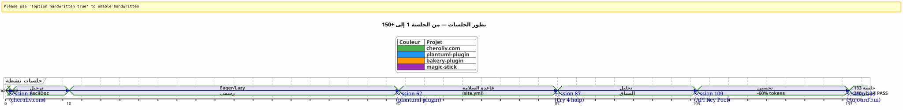
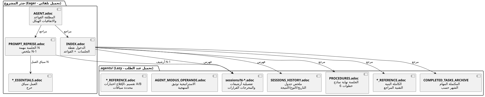

إدارة عميل ذكاء اصطناعي باستخدام AsciiDoc: استراتيجيتي Eager/Lazy لجلسات Opencode بدون تسريب للسياق
نُشر في 24 April 2026
ملخص
عندما نعمل مع وكيل ذكاء اصطناعي مثل Opencode على مشاريع معقدة عبر عدة جلسات، نواجه مشكلة أساسية :تسرب السياق. الوكيل لا يتذكر الجلسة السابقة. كل ما تم شرحه له — الهندسة، الاتفاقيات، حالة قائمة المهام — قد ضاع. إعادة بناء هذا السياق في كل جلسة مكلفة، بطيئة ومصدر للخطأ.
يستعرض هذا المقال الاستراتيجية الحرفية التي بنيتها لحل هذه المشكلة: نظام حوكمة مستمر مستند إلى ملفات AsciiDoc، مع ثنائيةمتحمس/كسوللتحسين استهلاك رمز السياق، وواحدةإجراء لا غنى عنه لإنهاء الجلسةلضمان الاستمرارية.
المشهد: الاثنين 21 أبريل، 9:00
أعيد فتح Opencode لاستئناف إضافة Gradle الخاصة بي`plantuml-plugin`. أمس المساء، قضيت ثلاث ساعات في مناقشة مع مهندس المعمارية لمجموعة مفاتيح API — دوران round-robin، إدارة الحصص، الاحتياطي التلقائي. هذا الصباح، ينظر إليّ الوكيل بعيون سمكة ذهبية.
_ مرحبًا، أنا مساعدك Opencode. كيف يمكنني مساعدتك اليوم؟ _
لا — آه نعم, مجموعة مفاتيح API, كنا نحن في بنية YAML. لا — انتباه,PlantumlManager`هو كائنシングلتون Kotlin، وليس فئة. لا — لا، قررنا أمس أن`SyntaxValidationResult`بقيت فئة sealed متداخلة في`PlantumlService.
كل شيء يجب إعادة صنعه. أو بالأحرى: كل شيء يجب إعادة شرحه. سأقضي العشرين دقيقة الأولى من جلستي في إعادة بناء السياق الذي كان الوكيل قد حصل عليه بالأمس بين يديه. عشرون دقيقة من الرموز المحترقة. عشرون دقيقة كان بإمكاني فيها أن أبرمج، لكنني أقوم بعمل تربوي إلزامي.
ليس هذا خطأً في Opencode. هذه هي الطبيعة ذاتها لل LLMs الحوارية: بين جلستين، الذاكرة العاملةمحذوفة بالكاملالوكيل لا يتذكر المهمة السابقة، ولا القرارات التي تم اتخاذها، ولا الفخاخ التي تم تحديدها، ولا الشفرة التي كتبناها معاً.
لقد عشته عشرات المرات. في أربعة مشاريع متزامنة. مع جلسات متتالية تستمر لأسابيع. حسبت : في المتوسط,30 إلى 40% من مدة الجلسةكان مخصصًا لإعادة سياق الوكيل. في الجلسة 87 من المشروع`plantuml-plugin`, انهريت. لم أعد أستطيع أن أسمح لنفسي بإعادة الشرح للمرة العاشرة أن`AttemptEntry`هي فئة بيانات من المستوى الأعلى في`DiagramProcessor.kt`.
كنت بحاجة إلى نظام. ليس إلى اختراق. حاكمية حقيقية.
الجينيسيس: من الفوضى إلى المنهج
الجلسات الأولى: عصر الظلام
مشروعي الأول مع Opencode,plantuml-plugin, بدأ دون أي حوكمة. أطرح سؤالاً، يرد الوكيل، نكرر، تنتهي الجلسة، وفي اليوم التالي نبدأ من الصفر. كانت الجلسة 1، ثم الجلسة 2، ثم الجلسة 3… حتى الجلسة 62 حيث أدركت أنني فقدت ساعات متراكمة في إعادة شرح نفس المعمارية.
في الجلسة 62، الأرقام موجودة :198 اختبارًا وحدةً نجح, 42 اختبارات وظيفية تم التحقق منها, الإضافة تعمل. لكن التكلفة الإدراكية لا تُطاق. كل جلسة جديدة تبدأ بمونولogue مدته zwanzig دقيقة حول هيكل المشروع.
الحلقة الخاصة بـ site.yml المدمّرة (الجلسة 2، bakery-plugin)
الطريقة تنشأ أيضًا من كارثة. على المشروع`bakery-gradle`, إلى الجلسة 2، أطلب من الوكيل تعديل الملف`site.yml`. الوكيل، دون التحقق مما إذا كان الملف مُصدَّرًا، يصنع`Write`الذي يكتب فوق المحتوى بالكامل. النتيجة: يتم استبدال الرموز الحقيقية (مفاتيح API Firebase، أسرار النشر) بعناصر بديلة وهمية. الملف لم يكن في git — كان في`.gitignore`لحماية الأسرار.
بدون نسخة احتياطية. بدون`git restore`possible. أنا عالق. عليَّ إعادة بناء ملف التكوين يدويًا، العثور على الرموز في مديري كلمات المرور الخاصة بي، وإعادة لصق كل شيء.
من هذا الإحباط يولدالقاعدة المطلقة 1ب:
_ لا تسحق أبداًملف إعدادات مع واحد`Write`كامل عندما`Edit`الجزئي يكفي.لا تستبدل أبدًااستبدال القيم الحساسة بقيم وهمية.تحقق git check-ignore و `git ls-filesقبل أي تعديل. _
هذه القاعدة، اليوم محفورة في الرخام من جميع ملفاتي`AGENT.adoc` et `INDEX.adoc`من بين أربعة مشاريع، نشأت من خطأ حقيقي كلفني ساعة من العمل اليدوي.
الهجرة من Markdown → AsciiDoc (الجلسة 1، cheroliv.com)
في 25 أبريل 2026، على`cheroliv.com`, أنا أتخذ قرارًا جذريًا: تحويل كامل حوكمة Markdown إلى AsciiDoc. هذا ليس جماليًا. إنه وظيفي. يقدم AsciiDoc بنية دلالية يقرأها نماذج اللغة الكبيرة بشكل أفضل: أقسام هرمية، جداول مكتوبة، تنبيهات (NOTE, WARNING, CAUTION), سمات الوثيقة القابلة للقراءة آليًا.
الجلسة 1 من`cheroliv.com`يُصيغُ الهيكل:
-
تحويل`AGENTS.md` en
AGENT.adoc -
إنشاء الوكلاء المتخصصين:`CODER.adoc`,
SCRUM_MASTER.adoc,PLANTUML_DESIGNER.adoc -
إنشاء البنية Eager/Lazy :`INDEX.adoc`,
SESSIONS_HISTORY.adoc,AGENT_SESSION_MANAGER.adoc,SESSION_CHECKLIST.adoc,PROCEDURES.adoc
الإلتزام الواحد :`90975e9 refactor: migrate agent governance from Markdown to AsciiDoc`. والموقع لا يزال يعمل.

التسلسل الزمني أعلاه يوضح التقدم الفعلي. نقطة التحول هي الجلسة 87: هذا هو المكان الذي يتجاوز فيه إحباط إعادة السياق المتكرر حد التحمل، وتصبح الطريقة المتحمسة/الكسلية ليست مجرد فكرة بل تصبح ضرورة.
الاستراتيجية: المتحمس / الكسول في العمق
الفلسفة: ذاكرة حاسوبية مطبّقة على الإدراك
نهجي مستلهم مباشرةً من إدارة الذاكرة المؤقتة الحاسوبية. كل ما هونقدي ويستخدم بشكل متكرريجب أن يكون متاحًا فورًا (متحمس). كل ما هوسياقي أو ضخميجب تحميله عند الطلب (كسول)).
متحمس (لوحة التحكم) |
كسول (دليل المالك) |
الحجم |
< 100 أسطر، < 10k رموز |
غير محدود, مفصل |
جارٍ التحميل |
تلقائيًا، في بداية الجلسة |
بناءً على طلب الموظف |
محتوى |
قواعد مطلقة, مهمة جارية, الحالة الحرجة |
أرشيف الجلسات، التاريخ الكامل، الإجراءات التفصيلية، المراجع الفنية |
دور |
وجه الوكيل فورًا |
أجب على أسئلة السياق العميق |
الملفات Eager : لوحة التحكم
هذه الملفات موجودة في جذر كل مشروع ويتم تحميلها تلقائيًا من قبل الوكيل في بداية كل جلسة. إنها تشكللوحة القيادة-- معلومات حرجة، يمكن الوصول إليها فورًا.

AGENT.adocالملف الرئيسي. على`cheroliv.com`, يتكون من 200 سطرًا ويتضمن :
-
القواعد المطلقة للمشروع (لا يُسمح بـ commit دون إذن، لا`rm`بدون تأكيد)
-
هيكل المشروع ومعايير الترميز
-
الأوامر الأساسية (
./gradlew serve,./gradlew test) -
القصص الملحمية وقائمة المنتج (قصص المستخدم المرتبة)
-
معايير الجودة العرضية (الوصولية, الاستجابة, التوافق)
على`bakery-plugin`, القاعدة 0 مختلفة :./gradlew -q publishToMavenLocal` إلزامي بعد كل تعديل على الكود المصدر. لأن اختبار البرنامج المساعد دون إعادة نشر JAR المحلي تسبب لي في فقدان ساعة في تصحيح خطأ في كود لم يتم حزمه بعد.
PROMPT_REPRISE.adoc-- مهمة الجلسة الجارية. محدث في نهاية كل جلسة، يحتوي على :
-
رقم الجلسة والمهمة ذات الأولوية
-
ملخص الجلسة السابقة (ما تم إنجازه وما يبقى لإنجازه)
-
معايير القبول للجلسة الحالية
-
التذكيرات التقنية المحددة
.agents/INDEX.adoc-- نقطة الدخول. يلخّص القواعد المطلقة، والجلسات الحديثة، والأهم من ذلكملف مشاريعيتم إدارتها بنفس المنهجية. حتى الآن، خمسة مشاريع مدرجة فيها :
----
----
----
----
----
| magic-stick | Session 23 | SCRIPT_VERIFICATION.adoc | 2026-04-27 |
| bakery-gradle | Session 11 | TEST_COVERAGE_ANALYSIS | 2026-04-27 |
| cheroliv.com | Session 9 | TEST_COVERAGE_ANALYSIS | 2026-04-27 |
| plantuml-gradle| Session 133| TEST_COVERAGE_ANALYSIS | 2026-04-23 |
| jhipster-gradle-plugins | Session 1 | TEST_COVERAGE_ANALYSIS | 2026-04-28 |
----
**`*_ESSENTIALS.adoc`** -- إضافة حديثة (جلسة 109، البرنامج المساعد plantuml-plugin) لتحسين السياق المتحمس بشكل أكبر. بدلاً من تحميل 200 سطر من سياق الأعمال على مجموعة مفاتيح واجهة برمجة التطبيقات، أتحمل 50 سطرًا من الأساسيات، وتظل 150 سطرًا أخرى في وضع التحميل المتكاسل في`*_REFERENCE.adoc`.
النتيجة المقاسة: مرور من**~25k tokens EAGER إلى ~10k tokens**(مكسب 60٪). الوكيل لم يعد بحاجة إلى تذكيرات تستهلك الطاقة.
==== الحلقة المفقودة : `opencode.json
عليّ أن أعترف لك بشيء كدت أن أنسى توثيقه. فوق جميع هذه الملفات .adoc، هناك ملف JSON صغير جدًا لا يعمل شيء بدونه. اسمه`opencode.json`وهو يكوّن ستة أسطر. حرفياً ستة أسطر.
[source,json]
----
{
"$schema": "https://opencode.ai/config.json",
"instructions": [
"AGENT.adoc"
]
}
----
هذا هو الملف الذي يقول لـ Opencode: « عند التشغيل، تحميل `AGENT.adoc`بشكل تلقائي. بدونه، الوكيل هو صفحة فارغة تمامًا كما وصفته في بداية المقال. معه، الوكيل يمتلك بالفعل في يده القواعد المطلقة، بنية المشروع، والأوامر الأساسية — حتى قبل أن أقول مرحبًا.
اكتشفت أهمية هذا الملف بالصدفة. على`bakery-plugin`، لم يكن موجوداً. كنت أتساءل لماذا كان الوكيل بشكل منهجي أكثر « ضائع » على هذا المشروع مقارنة بالآخرين. كانت القواعد المطلقة جيدًا في`AGENT.adoc`— لكن`AGENT.adoc`لم يُحمل أبدًا. لم يكن الوكيل يقرأ سوى ما كنت أخبره بقراءته، يدويًا، في كل جلسة. كانت الجلسة 11 من`bakery-plugin`عندما أدركت غياب`opencode.json`. أنا أنشأته — و بدأت الجلسة 12 مثل باقي الجلسات.
هذا الملف واضح للغاية بالنسبة لي الآن إلى درجة أنني لم أكن أفكر فيه حتى. إنه خطأ كلاسيكي من مطور يعرف أداته جيدًا. اليوم، أقوم بإنشائه بشكل منهجي *avant*`AGENT.adoc`. هذا هو الحجر الأول.
==== الثنائية لـ `INDEX.adoc
تفصيل دقيق آخر يستحق أن يُوضَّح :`INDEX.adoc`يعيش في`.agents/`— ملف قدمته كـ LAZY. ومع ذلك، أدرجته كـ EAGER في جميع جدولي. يوجد توتر ظاهر هنا.
الواقع الميداني: الملفات`.agents/INDEX.adoc`يتم تحميلها تلقائيًا في بداية الجلسة، تمامًا كما`AGENT.adoc` et `PROMPT_REPRISE.adoc`. هم في`.agents/`لأسباب تنظيمية — لا تغزو الجذر — لكن سلوكهم متحمس.
على`plantuml-plugin`, `INDEX.adoc`يبلغ 200 سطرًا ويحتوي على القواعد المطلقة *الكاملة* مع تاريخها (دروس الجلسات السابقة)، وEPICs مع الدرجات، ومحفظه المشاريع. هذا المستند هو الذي يرجعه الوكيل لمعرفة « حيث نحن ». على`bakery-plugin`, وهو يحتوي على 150 سطرًا مع خريطة الطريق والجلسات الحديثة.
التكرار الطوعي بين`AGENT.adoc` et `INDEX.adoc`قد يفاجئ. القواعد المطلقة موجودة في كلا الأمرين. لماذا؟ لأنهم يملأون دورين مختلفين : في`AGENT.adoc`, هنَّ *تفسيرية*(الحكاية الخاصة بالقاعدة، الدرس المستفاد) ; في`INDEX.adoc`, هن *تنفيذيات* (القاعدة العارية، بدون مبرر، لاستشارة سريعة). الوكيل يقرأ`AGENT.adoc`مرّة واحدة للفهم؛ فإنه يعيد القراءة`INDEX.adoc`في كل جلسة لـ *تطبيق*. استخدامان، تنسيقان
[plantuml, format=svg, id=diag-dualite-agent-index, alt="Comparaison entre AGENT.adoc (narratif) et INDEX.adoc (exécutif)"]
----
@startuml
skinparam backgroundColor #FEFEFE
skinparam defaultTextAlignment center
title ثنائية AGENT.adoc ←→ INDEX.adoc
left to right direction
rectangle "AGENT.adoc\n(الجذر — EAGER)" as AGENT #E3F2FD {
rectangle "📖 **الصيغة السردية**\nالقصّة الخاصة بالقاعدة\nالدّرس المستفاد، السياق" as NARR
rectangle "�🏗️ **العمارة الكاملة**\nهيكل المشروع، المكونات\nBacklog التفصيلي US" as ARCHI
rectangle "📋 **القواعد التوضيحية**\nلماذا توجد القاعدة\nتاريخ الحادث" as EXPL
}
rectangle "INDEX.adoc\n(.agents/ — EAGER)" as INDEX #E8F5E9 {
rectangle "�⚡ **التنسيق التنفيذي**\nالقاعدة العارية، بدون مبرر\nاستشارة سريعة" as EXEC
rectangle "�📊 **Roadmap & EPICs**\nملخص الجدول\nالتقدم، النتيجة، الأولوية" as ROAD
rectangle "🌐 **ملف المشاريع**\nعرض عام\n5 مشاريع متزامنة" as PORT
}
AGENT --> INDEX : "الوكيل يقرأ AGENT.adoc\nمرة واحدة **لفهم**"
INDEX --> AGENT : "Agent relit INDEX.adoc\nكل جلسة لـ **تطبيق**"
note bottom of AGENT
Taille max : 200 lignes
end note
note bottom of INDEX
Taille max : 200 lignes
Source de vérité en cas de divergence
end note
@enduml
----
هذه التكرار المتقصد هو خيار تصميم. إنه يستهلك حوالي 50 سطرًا إضافيًا من رموز EAGER — لكنه يضمن أن الوكيل دائمًا لديه القواعد أمام عينيه، حتى في الشكل المختصر الذي يسهل الامتثال الفوري.
=== ملفات LAZY: دليل المالك
هذه الملفات تعيش في`.agents/`ولا تُقرأ إلا عندما يحتاج الوكيل إليها. إنها تشكل الثروة الحقيقية للطريقة، لأنها تراكم معرفة المشروع دون تلويث السياق الحالي.
[plantuml, format=svg, id=diag-agents-tree, alt="Arborescence complète du dossier .agents/"]
----
@startuml
skinparam folderBackgroundColor #E3F2FD
skinparam folderBorderColor #1565C0
skinparam fileBackgroundColor #FFF3E0
skinparam fileBorderColor #EF6C00
folder ".وكلاء/" as ROOT {
file "INDEX.adoc\n(EAGER -- 200 أسطر)" as IDX #E8F5E9
file "AGENT_SESSION_MANAGER.adoc\n(جلسة قالب)" as ASM
file "SESSION_CHECKLIST.adoc\n(متى التغيير)" as CHK
file "PROCEDURES.adoc\n(6 مراحل + LAZY/EAGER)" as PRO
file "SESSIONS_HISTORY.adoc\n(كل الجلسات)" as HIS
folder "جلسات/" as SESS {
file "1-chore-migration.adoc" as S1
file "109-التشكل-كسول.adoc" as S109 #FFECB3
file "133-epic11-article.adoc" as S133
file "... +130 آخرين" as SMORE
}
folder "الأرشيف/" as ARCH {
file "المهام_المكتملة_2026-04.adoc" as CTA
file "SESSIONS_HISTORY_83-95.adoc" as SHIST
folder "جلسات_ملخصات/" as SUM {
file "SESSION_64_SUMMARY.adoc" as SU64
file "SESSION_73_SUMMARY.adoc" as SU73
file "..." as SUMORE
}
folder "prompts_أرشيف/" as PARCH {
file "PROMPT_REPRISE_S65.adoc" as PR65
file "PROMPT_REPRISE_S75.adoc" as PR75
file "..." as PMORE
}
}
}
IDX --> SESS : "فهرس"
IDX --> HIS : "فهرس"
IDX --> ARCH : "مرجع"
note right of S109
Session 109 =
Formalisation stratégie
LAZY/EAGER
Token : ~25k → ~10k
end note
@enduml
----
الهيكل الشجري أعلاه يُظهر الهيكل الحقيقي للمجلد.`.agents/`على`plantuml-plugin`, المشروع الأكثر نضجًا. لاحظ العمق في ثلاث طبقات: ملفات الجذر (البيانات التعريفية)، المجلد`sessions/`(الأرشيفات الزمنية), ملف`archives/`(التجميعات والملخصات). هذا العمق هو الذي يحول الحوكمة من ملف TODO بسيط إلى**ذاكرة تنظيمية كاملة**.
**.agents/sessions/{N}-{العنوان}.adoc**-- الأرشيفات التفصيلية لكل جلسة. حاليًا :
* `plantuml-plugin` : **133 جلسة مؤرشفة**(من الجلسة 1 إلى الجلسة 133)
* `bakery-plugin` : **11 جلسات**
* `magic-stick`:**23 جلسات**
* `cheroliv.com` : **9 جلسات رسمية**+ 7 جلسات ما قبل النظام أعيد بناؤها بأثر رجعي
يحتوي كل أرشيف على السياق الكامل للجلسة، والقرارات المتخذة، والمشكلات التي واجهت وحلها، والأوامر التي نفذت وناتجها.
**.agents/SESSIONS_HISTORY.adoc**-- جدول ملخص لجميع الجلسات مع درجة. مثال على`cheroliv.com`:
----
| -6 | 2025-05 | chore | Initialisation projet Gradle/JBake | 7/10 | 1 | 2026-04-25 | chore | Migration gouvernance agent | 8/10 | 7 | 2026-04-27 | debug/fix | Correction publishSite | 9/10 | 8 | 2026-04-27 | analyse | Analyse article 0108 | 7/10
**.agents/COMPLETED_TASKS_ARCHIVE_{شهر}.adoc**المهام المكتملة المؤرشفة شهريًا، لتجنب إرهاق الباك-لوج النشط. عندما تُنهي قصة المستخدم، يتم نقلها إلى هنا. يبقى الباك-لوج قابلاً للقراءة: الحد الأقصى 10 عناصر نشطة.
**.agents/PROCEDURES.adoc**-- قوالب مفصلة لإجراءات نهاية الجلسة. طويلة، لكنها تُقرأ مرة واحدة فقط من قبل الوكيل عندما يتعلم الطريقة. بعد ذلك، يصبح الإجراء ميكانيكياً.
**.agents/AGENT_MODUS_OPERANDI.adoc**-- الوثيقة الاستراتيجية الكاملة. على`plantuml-plugin`, هذا الملف يفعل**900+ أسطر**و هو في الواقع يُدعى`AGENT_METHODOLOGIES.adoc`— غيّرتُ الاسم بين كتابة هذه المقالة وتفعيلها الفعلي. هذا النوع من الاختلاف في التسمية لا مفر منه في نظام يدوي يتطور. الأهم هو اتفاقية التسمية: إذا كان الملف يوثّق *الطريقة*، فيبدأ بـ`AGENT_`أو بادئة صريحة. يُوثق منهجية Eager/Lazy، والأنماط التي يجب اتباعها والأنماط المضادة التي يجب تجنبها. إنه LAZY لأن الوكيل لا يحتاج إلى إعادة قراءة الاستراتيجية بأكملها في كل جلسة، فقط عندما يكون هناك غموض.
**`*_REFERENCE.adoc`** -- المراجع التقنية الخاصة بالمشروع. على`magic-stick`, ملفين LAZY كثيفين:
* `AB_PARTITION_REFERENCE.adoc`(147 سطر) -- تقسيم المعمارية A/B GPT, النصوص`update-system.sh`, الأحجام المقدرة, آلية التراجع
* `BOOT_TEST_REFERENCE.adoc`(144 سطر) -- إجراء QEMU + VNC لاختبار تمهيد ISO بدون جهاز مادي، قائمة تحقق BIOS/UEFI، قيود CI/CD
على`plantuml-plugin`(Empty)
* `ARCHITECTURE.adoc`(134 سطرًا) -- الهيكل 11 فئة بيانات، نقاط انتباه (مخاطر يجب تجنبها)، أوامر اختبار محسّنة
* `API_KEY_POOL_REFERENCE.adoc`-- تفاصيل كاملة لمجمع المفاتيح (LAZY أثناء`ESSENTIALS`هو EAGER)
== الوكلاء المتخصصون : فريق افتراضي
لا تقتصر الحوكمة على ملفات سلبية. لقد قمت بصياغة بعض**أدوار الوكلاء المتخصصين**في ملفات LAZY المخصصة، التي تحدد سير العمل المتوقع وفقًا لنوع المهمة.
|===
|وكيل |ملف |الدور |مشروع |**مبرمج** |`CODER.adoc` |التنفيذ FTL/CSS/JS، الوسوم الدلالية، معايير إمكانية الوصول |cheroliv.com |**سكروم ماستر** |`SCRUM_MASTER.adoc` |التخطيط US, التقسيم إلى مهام فرعية, اكتشاف الاعتماديات |cheroliv.com |**PlantUML مصمم** |`PLANTUML_DESIGNER.adoc` |إنشاء الرسوم البيانية, صياغة PUML, تكامل JBake |cheroliv.com
|===
الملف`CODER.adoc`على`cheroliv.com`يحتوي على قواعد ملموسة : _واحد فقط`<h1>`لكل صفحة_, _إضافة البادئة ال الطرق مع`${content.rootpath}`_, _إعلان اللغة`<html lang="${content.lang!"fr"}">`_. هذه الاتفاقيات، التي تم كتابتها مرة واحدة، تُحترم تلقائيًا من قبل الوكيل منذ الجلسة 1.
الملف`SCRUM_MASTER.adoc`يفرض هيكلًا للمخرج:**الهدف**, **مهام**(مرتبة مع تعيين),**معايير القبول**, **المخاطر**. عندما أطلب خطة عمل، ينتج الوكيل هذه الهيكلية دون أن أطلبها. الحوكمة**برنامج**الوكيل.
==== عندما يصبح الوكلاء المتخصصون لا غنى عنهم
في بداية المشروع، لا تحتاج إليهم —`AGENT.adoc`يكفي كثيرًا. لكن عندما ينمو المشروع (لنفترض، ما بعد 20 جلسة)، يجب أن يحذّرك إشارتان :
1. يخلط الوكيل الاتفاقيات بين مجالين متميزين (مثل: صياغة PlantUML وقواعد CSS)
2. أنت تقضي وقتًا أطول في تصحيح الوكيل حول الاتفاقيات التي شرحت له خمس مرات بالفعل
على`cheroliv.com`, وصل إلى الجلسة... 1. نعم، من البداية. لأن هذا المشروع هو موقع ويب يحتوي على ثلاث لغات (FTL, CSS, JS)، محتوى `AsciiDoc`، ومخططات `PlantUML` — ثلاثة مجالات لا علاقة لها ببعض. الوكيل `CODER` يحتاج إلى معرفة أحجام الخطوط والاستعلامات الوسائطية ; الوكيل `PLANTUML_DESIGNER` يحتاج إلى معرفة الصياغة`@startuml`. بدون فصل، الوكيل CODER كان يقترح لي مخططات، وبالعكس. الفوضى.
على`jhipster-gradle-plugins`, قمت بإنشاء وكيين متخصصين ملائمين لتطوير ملحقات Gradle :`PLUGIN_DEVELOPER.adoc` et `BACKLOG_MANAGER.adoc`. الأول يشفّر جميع اتفاقيات Kotlin/Gradle (لا`!!`, فئات البيانات للنماذج,`@TaskAction`للمهام). الثاني يعرف أن`persistence`يجب أن يكون مستقرًا قبل أن`assistant`لا يبدأ تطويره — اعتمادية حاسمة في مستودع أحادي
الخطأ الذي لا ينبغي ارتكابه: إنشاء عدد كبير جدًا من الوكلاء في وقت مبكر.`plantuml-plugin`انتظر الجلسة 108 قبل تحديد وكيل متخصص لمجموعة مفاتيح API. قبل ذلك، كان السياق التجاري محتوى في`AGENT.adoc`. القاعدة التجريبية: يُبرر وكيل متخصص عندما يتجاوز مجال عمله 100 سطر من التوثيق.
==== اتفاقية تسمية الجلسات
تفصيل يبدو تافهاً لكنه يصبح حرجًا عندما نصل إلى 100 جلسة. كيف يتم تسمية ملفات الأرشيف؟
تعلمت بصعوبة أن اتفاقية ضرورية — أربعة مشاريع، أربعة تنسيقات مختلفة في البداية، ولم أعد أستطيع متابعتها. اليوم، الاتفاقية التي استقرت عليها هي :
----
{N}-{type}-{sujet-kebab-case}.adoc
أمثلة ملموسة:
* `1-chore-migration-gouvernance-agent.adoc`— الجلسة 1، نوع المهمة
* `10-solidification-tests.adoc`— الجلسة 10، من دون نوع صريح (الموضوع كافٍ)
* `036-debug-graphify-symlink-epic9.adoc`— جلسة 36 مع رقم مكون من 3 أرقام للترتيب
رقم الجلسة هو معيار الفرز الرئيسي. المشاريع التي تستخدم أرقامًا مكونة من ثلاثة أرقام (001, 036, 133) تتجنب مشاكل الفرز اللفظي عندما يتجاوز الرقم 99. هذا ما أستخدمه الآن على`magic-stick`:`001-init-projet.adoc`, `036-debug-graphify-symlink-epic9.adoc`.
النوع اختياري ومشتق من كلمات مفتاحية للجلسة (debug, feature, refactor, docs, chore, test). الموضوع بتنسيق kebab-case هو الجزء الأهم: يجب أن يسمح بالعثور على الجلسة دون فتح الملف. إذا كنت تتساءل « ما كانت الجلسة التي عدّلنا فيها مهلة انتهاء اختبارات التكامل ؟ »، الجواب هو`124-fix-timeout-integration-test.adoc`.
للجلسات التاريخية المعاد بناؤها (المشاريع التي ولدت قبل الحوكمة)، أستخدم أرقامًا سالبة. على`cheroliv.com`, تغطي الجلسات من -6 إلى 0 كامل تاريخ ما قبل الحوكمة للمشروع. وأما بالنسبة للجلسات « غير الموثقة » أو المفقودة، فأنا أقوم بإنشاء إدخال في`SESSIONS_HISTORY.adoc`بدون أرشيف مطابق، مع نتيجة`?`إنه أكثر صدقًا من التظاهر.
[plantuml, format=svg, id=diag-naming-convention, alt="Arbre de décision pour le nommage des fichiers de session"]
----
@startuml
skinparam backgroundColor #FEFEFE
skinparam defaultTextAlignment center
skinparam wrapWidth 200
title اتفاقية تسمية الجلسات
start
:Une session se termine;
note right: Trigger "نهاية الجلسة"
if (Session antérieure\nà la gouvernance ?) then (oui)
:Numéro **NÉGATIF**\n-6, -5 ... 0;
note right: Historique\nreconstitué
:Suffixe : reconstitution;
else (non)
:Numéro **POSITIF**\nsur 3 chiffres si > 99;
note right: 001, 036, 133\npour le tri lexicographique
:Détecter le **TYPE**;
if (Mots-clés trouvés ?) then (oui)
:debug / feature / refactor\ndocs / chore / test;
else (non)
:Omettre le type\n(le sujet suffit);
endif
:Formuler le **SUJET** en kebab-case;
note right
Ex: fix-timeout-integration-test
Doit permettre de retrouver
sans ouvrir le fichier
end note
endif
:Nom final : {N}-{type}-{sujet}.adoc;
note right
• 1-chore-migration-gouvernance.adoc
• 036-debug-graphify-symlink.adoc
• 124-fix-timeout-integration-test.adoc
• 133-epic11-article-blog-kg.adoc
end note
if (Session documentée ?) then (oui)
:Créer archive dans sessions/;
:Ajouter ligne SESSIONS_HISTORY\navec score X/10;
else (non)
:Ajouter ligne SESSIONS_HISTORY\navec score **?**\n**sans archive**;
note right: L'honnêteté\nplutôt que le vide
endif
stop
@enduml
----
==== TEST_COVERAGE_ANALYSIS.adoc` — تفصيل الخطوة 5
الخطوة 5 من إجراء نهاية الجلسة هي الأكثر غموضًا. تقول « تحديث`TEST_COVERAGE_ANALYSIS.adoc`إذا تم إضافة أو تعديل الاختبارات. » كيف يبدو هذا الملف؟
على`plantuml-plugin`, لقد تطور من عدد قليل من الأسطر إلى بنية كاملة. وهنا شكله المستقر:
[source]
----
= Analyse de Couverture de Tests
== Suivi des Tests
|===
| Classe de test | Type | Tests | Statut | Dernière MAJ
| PlantumlServiceTest | unit | 45/45 | ✅ PASS | 2026-04-23
| ApiKeyPoolTest | integration | 15/15 | ✅ PASS | 2026-04-20
|===
== Historique par Session
| Session | Tests ajoutés | Tests modifiés | Couverture
| 133 | 0 | 2 | 100%
| 132 | 5 | 0 | 100%
|===
----
الاهتمام ليس الملف نفسه — بل هو الالتزام بـ *توثيق* ما تغير. بدون هذه الخطوة، بعد 50 جلسة، لن تعرف أي الاختبارات تغطي quoi. والوكيل أيضًا لا يعرف. يصبح الملف المصدر الوحيد للحقيقة لتغطية اختبارات المشروع.
للمشاريع التي لا تحتوي على اختبارات تقليدية (مثل`magic-stick`الذي يختبر نصوص bash), الخطوة 5 يتم استبداله بـ`SCRIPT_VERIFICATION.adoc`الآلية هي نفسها: ملف يتتبع حالة التحقق من النصوص. قم بتكييف الخطوة 5 مع مشروعك، ولكن لا تتخطاها أبدًا. إنها شبكة الأمان التي تمنع التراجع الصامت.
[plantuml, format=svg, id=diag-dualite-agent-index, alt="Comparaison entre AGENT.adoc (narratif) et INDEX.adoc (exécutif)"]
----
@startuml
skinparam backgroundColor #FEFEFE
skinparam defaultTextAlignment center
title ثنائية AGENT.adoc ←→ INDEX.adoc
left to right direction
rectangle "AGENT.adoc\n(الجذر — EAGER)" as AGENT #E3F2FD {
rectangle "📖 **الصيغة السردية**\nالسرد القصصي للقاعدة\nالدرس المستفاد، السياق" as NARR
rectangle "🏗️ **الهندسة المعمارية الكاملة**\nبنية المشروع، المكونات\nقائمة قصص المستخدم التفصيلية" as ARCHI
rectangle "📋 **قواعد توضيحية**\nلماذا توجد القاعدة\nتاريخ الحادث" as EXPL
}
rectangle "INDEX.adoc\n(.agents/ — EAGER)" as INDEX #E8F5E9 {
rectangle "⚡ **التنسيق التنفيذي**\nالقاعدة المجردة، دون تبرير\nاطلاع سريع" as EXEC
rectangle "📊 **خارطة الطريق والملاحم**\nجدول موجز\nالتقدم، النتيجة، الأولوية" as ROAD
rectangle "🌐 **محفظة المشاريع**\nعرض شامل\n5 مشاريع متزامنة" as PORT
}
AGENT --> INDEX : "يقرأ الوكيل AGENT.adoc\nمرة واحدة من أجل **أن يفهم**"
INDEX --> AGENT : "الوكيل يعيد قراءة INDEX.adoc\nفي كل جلسة من أجل **تطبيق**"
note bottom of AGENT
Taille max : 200 lignes
end note
note bottom of INDEX
Taille max : 200 lignes
Source de vérité en cas de divergence
end note
@enduml
----
[plantuml, format=svg, id=diag-session-flow, alt="Flux d'une session type avec Eager/Lazy et agents"]
----
@startuml
skinparam backgroundColor #FEFEFE
start
:Début session;
note right: L'agent est une page blanche
:Chargement EAGER auto;
note right
* AGENT.adoc (règles absolues)
* PROMPT_REPRISE.adoc (mission N)
* INDEX.adoc (état projet)
end note
if (Mission claire ?) then (oui)
:Exécution directe;
else (non)
:Charge LAZY sur demande;
note right
* SESSIONS_HISTORY.adoc (contexte passé)
* sessions/{N-1}-*.adoc (décisions)
* *_REFERENCE.adoc (architechture)
end note
endif
:Délégation agent spécialisé ?;
if (CODER ?) then (oui)
:Lit CODER.adoc;
:Suit conventions FTL/CSS;
elseif (SCRUM Master ?) then (oui)
:Lit SCRUM_MASTER.adoc;
:Structure livrable imposée;
elseif (PlantUML ?) then (oui)
:Lit PLANTUML_DESIGNER.adoc;
:Syntaxe PUML + intégration;
else (non)
endif
:Travail de la session;
:Fin de session (trigger utilisateur);
:Procédure 6 étapes;
note right
1. Archive sessions/N-*.adoc
2. Maj PROMPT_REPRISE.adoc (N+1)
3. Maj SESSIONS_HISTORY.adoc
4. Maj INDEX.adoc
5. Maj TEST_COVERAGE (si applicable)
6. Maj COMPLETED_TASKS_ARCHIVE.adoc
end note
:Checklist [✅] x 6;
stop
@enduml
----
الرسم البياني أعلاه يُظهر دورة الحياة الكاملة لجلسة. النقطة الأساسية هي الانقسام بعد التحميل EAGER: إما أن تكون المهمة واضحة بما يكفي للتنفيذ المباشر (80٪ من الحالات)، أو يقوم الوكيل بتحميل LAZY لحل غموض (20٪ من الحالات). هذا التمييز هو ما يوفّر الرموز.
== إجراء نهاية الجلسة : القاعدة الذهبية
[plantuml, format=svg, id=diag-agents-tree, alt="Arborescence complète du dossier .agents/"]
----
@startuml
skinparam folderBackgroundColor #E3F2FD
skinparam folderBorderColor #1565C0
skinparam fileBackgroundColor #FFF3E0
skinparam fileBorderColor #EF6C00
folder ".وكلاء/" as ROOT {
file "INDEX.adoc\n(EAGER -- 200 سطر)" as IDX #E8F5E9
file "AGENT_SESSION_MANAGER.adoc\n(جلسة القالب)" as ASM
file "SESSION_CHECKLIST.adoc\n(متى يتم التغيير)" as CHK
file "PROCEDURES.adoc\n(6 خطوات + LAZY/EAGER)" as PRO
file "SESSIONS_HISTORY.adoc\n(كل الجلسات)" as HIS
folder "جلسات/" as SESS {
file "1-chore-migration.adoc" as S1
file "109-الصياغة-الكسولة.adoc" as S109 #FFECB3
file "133-epic11-article.adoc" as S133
file "... +130 آخرين" as SMORE
}
folder "أرشيف/" as ARCH {
file "المهام_المكتملة_2026-04.adoc" as CTA
file "SESSIONS_HISTORY_83-95.adoc" as SHIST
folder "ملخصات_الجلسات/" as SUM {
file "SESSION_64_SUMMARY.adoc" as SU64
file "SESSION_73_SUMMARY.adoc" as SU73
file "..." as SUMORE
}
folder "أرشيف_المطالبات/" as PARCH {
file "PROMPT_REPRISE_S65.adoc" as PR65
file "PROMPT_REPRISE_S75.adoc" as PR75
file "..." as PMORE
}
}
}
IDX --> SESS : "فهرس"
IDX --> HIS : "فهرس"
IDX --> ARCH : "مرجع"
note right of S109
Session 109 =
Formalisation stratégie
LAZY/EAGER
Token : ~25k → ~10k
end note
@enduml
----
بدون هذا الإجراء، لا تُفيد استراتيجية Eager/Lazy شيئًا. هي التي تحوّل عمل الجلسة إلى معلومات مستمرة. يتم تنفيذها.**بناءً على الطلب الصريح للمستخدم**(الكلمات المفتاحية: "نهاية الجلسة", "أنا أغادر", وما إلى ذلك), وهي**إلزامي**-- لا استثناء، لا إهمال.
الملف`SESSION_CHECKLIST.adoc`يحدد مقاييس الجلسة المثالية :
* المدة: 15-30 دقيقة
* الملفات المعدلة: من 1 إلى 3 كحد أقصى
* تبادلات LLM : 5-10 رسائل
* السياق التوكنز : < 50k
وأشارات يجب تغيير الجلسة: _النموذج اللغوي يكرر أخطاءً تم تصحيحها بالفعل_، _أكثر من 3 ملفات تم تعديلها بشكل متوازٍ_، _المحادثة > 50 رسالة_. القاعدة الذهبية :**من الأفضل 5 جلسات مدة 20 دقيقة بدلا من جلسة واحدة مدة ساعتين مع تصحيح أخطاء فوضوي.**
=== تدفق الخطوات الست (صمتًا)
[plantuml, format=svg, id=diag-end-session-flow, alt="Flux de la procédure de fin de session"]
----
@startuml
skinparam defaultTextAlignment center
skinparam wrapWidth 200
skinparam activityBackgroundColor #E3F2FD
start
:L'utilisateur dit "نهاية الجلسة";
note right: Mots-clés déclencheurs
:Agent détecte le trigger;
:Étape 1\nCréer archive\n`.agents/sessions/N-*.adoc`;
note right: Tout le contexte de la session
:Étape 2\nMettre à jour\n`PROMPT_REPRISE.adoc`;
note right: Mission N + critères d'acceptation N+1
:Étape 3\nMettre à jour\n`SESSIONS_HISTORY.adoc`;
note right: Ligne récap : # / Date / Type / Sujet / Score
:Étape 4\nMettre à jour\n`INDEX.adoc`;
note right: État courant, roadmap, fichiers modifiés
:Étape 5\nMettre à jour\n`TEST_COVERAGE_ANALYSIS.adoc`;
note right: Si tests ajoutés ou modifiés
:Étape 6\nMettre à jour\n`COMPLETED_TASKS_ARCHIVE.adoc`;
note right: Archiver tâches terminées
:Afficher la checklist de confirmation;
note right: Vérifier que chaque [✅] est mérité
stop
@enduml
----
=== نتائج 150+ جلسات
هذه هي النتيجة التي تنتج عن تطبيق هذه الطريقة بشكل منهجي على مشاريعي الأربعة:
**إضافة PlantUML**:
* **133 جلسات**من بداية المشروع
* **240/240 اختبارًا نجح**(100% التغطية) -- EPICs 1-7 مكتملة
* **57 سيناريوهات Cucumber BDD**تم التحقق منها
* قاعدة أمان على ملفات الإعدادات ناتجة عن خطأ حقيقي (جلسة 2 bakery-plugin)
**إضافة المخبز**:
* **11 جلسات**في أسبوعين
* تم إكمال نقل Supabase → Firebase (تم إصلاح 9 اختبارات)
* EPIC 6 (publishProfile) يعمل في الإنتاج
* قاعدة 0 تم إنشاؤها :`publishToMavenLocal`إلزامي بعد كل تعديل
**عصا سحرية** :
* **23 جلسات**لبناء نظام مباشر Xubuntu مع تقسيم A/B
* أول ISO تم إنشاؤه في الجلسة 10
* اختبارات الإقلاع الرسمية لـ QEMU + VNC (وثيقة LAZY من 144 سطر)
* CI/CD SourceForge يعمل
**cheroliv.com** :
* **9 جلسات رسمية**+ إعادة تشكيل 7 جلسات ما قبل النظام
* المادة 0101 (OpenCode PATH) نُشر
* المادة 0108 (هذا) أعيد كتابتها بعد تحليل ثغراتها
* الإدارة الكاملة تم ترحيلها من Markdown إلى AsciiDoc
=== قائمة المراجعة النهائية
بعد التنفيذ الصامت للخطوات الست، يجب على الوكيل عرض قائمة تحقق التأكيد:
✅ Procédure de fin de session exécutée 📋 Checklist :
**القاعدة المطلقة**: لا يمكن وضع علامة على أي خطوة`[✅]`إذا لم يتم تعديل الملف فعليًا والتحقق منه.
== دليل Bootstrap: اليوم 1، الجلسة 0
أنت مقتنع بالطريقة. تريد تطبيقها على مشروع جديد. من أين تبدأ؟
عشتُ تلك اللحظة في 28 أبريل 2026. أفتح Opencode على`jhipster-gradle-plugins`, مستودعي الأحادي المكون من مكونين Gradle JHipستر. هذا مشروع موجود بالفعل — الكود موجود، ومهام Gradle تعمل. لكن حوكمة الوكيل؟ صفر. صفحة فارغة. كما`plantuml-plugin`في دورته الأولى، منذ أشهر
هذه هي الإجراءات الدقيقة التي اتبعتها، وسأتبعها لكل مشروع جديد. لاحظ الترتيب جيدًا — إنه مهم.
[plantuml, format=svg, id=diag-bootstrap, alt="Flux de bootstrap en 6 étapes pour initialiser la gouvernance agent sur un nouveau projet"]
----
@startuml
skinparam backgroundColor #FEFEFE
skinparam defaultTextAlignment center
skinparam wrapWidth 250
skinparam activityBackgroundColor #E8F5E9
title Bootstrap حوكمة — اليوم 1، الجلسة 0
start
:Étape 0\nCréer **opencode.json**\n(6 lignes, instructions: AGENT.adoc);
note right: Le pont qui charge\nAGENT.adoc automatiquement
:Étape 1\nCréer les dossiers\n**mkdir -p .agents/sessions/ .agents/archives/**;
note right: Les conteneurs vides\navant que l'agent écrive dedans
:Étape 2\nCréer **AGENT.adoc**\n(200 lignes, règles absolues);
note right: Le fichier maître\nStructure minimale v1
:Étape 3\nCréer **PROMPT_REPRISE.adoc**\nMission session 1 (max 70 lignes);
note right: Ce que l'agent doit\nfaire à la prochaine session
:Étape 4\nCréer **.agents/INDEX.adoc**\nRègles exécutives + roadmap;
note right: Point d'entrée EAGER\ndans le dossier LAZY
:Étape 5\nCréer les fichiers LAZY structurants\n6 fichiers : SESSIONS_HISTORY, CHECKLIST, etc.;
note right
• SESSIONS_HISTORY.adoc
• SESSION_CHECKLIST.adoc
• PROCEDURES.adoc
• AGENT_SESSION_MANAGER.adoc
• TEST_COVERAGE_ANALYSIS.adoc
• Agents spécialisés (si besoin)
end note
:Étape 6\nAjouter le projet au Portefeuille\nMettre à jour TOUS les INDEX.adoc existants;
note right: Maintenance transverse\nObligatoire mais fastidieuse
:✅ Bootstrap terminé\nSession 1 prête;
note right: 20 minutes investies\nDes centaines économisées
stop
@enduml
----
=== الخطوة 0 : إنشاء `opencode.json
هذا هو الملف الأول. لا`AGENT.adoc`, لا`INDEX.adoc`.`opencode.json`أولاً، لسبب بسيط: إذا تقوم بإنشاء`AGENT.adoc`أولاً، ستنسى إنشاء الجسر الذي يشحنه تلقائيًا. لقد فعلته على`bakery-plugin`, أعرف ما أتحدث عنه.
=== الخطوة 1: إنشاء المجلدات
[source,bash]
----
mkdir -p .agents/sessions .agents/archives
----
مجلدان فارغان`sessions/`سيتلقى الأرشيفات لكل جلسة.`archives/`سيستقبل COMPLETED_TASKS_ARCHIVE الشهري. يجب أن تكون هذه المجلدات موجودة *قبل* أن يحتاج الوكيل إلى الكتابة فيها. الوكيل الذي يجب أن ينشئ المجلد والملف في نفس الوقت، هو وكيل يمكن أن يفشل بصمت.
=== الخطوة 2 : إنشاء `AGENT.adoc` — الملف الرئيسي
الحد الأدنى للهيكل للنسخة الأولى (ستنمو) :
[source]
----
= {NOM_PROJET} — Directives Agent
[CAUTION]
----
[plantuml, format=svg, id=diag-naming-convention, alt="Arbre de décision pour le nommage des fichiers de session"]
----
@startuml
skinparam backgroundColor #FEFEFE
skinparam defaultTextAlignment center
skinparam wrapWidth 200
title اتفاقية تسمية الجلسات
start
:Une session se termine;
note right: Trigger "نهاية الجلسة"
if (Session antérieure\nà la gouvernance ?) then (oui)
:Numéro **NÉGATIF**\n-6, -5 ... 0;
note right: Historique\nreconstitué
:Suffixe : reconstitution;
else (non)
:Numéro **POSITIF**\nsur 3 chiffres si > 99;
note right: 001, 036, 133\npour le tri lexicographique
:Détecter le **TYPE**;
if (Mots-clés trouvés ?) then (oui)
:debug / feature / refactor\ndocs / chore / test;
else (non)
:Omettre le type\n(le sujet suffit);
endif
:Formuler le **SUJET** en kebab-case;
note right
Ex: fix-timeout-integration-test
Doit permettre de retrouver
sans ouvrir le fichier
end note
endif
:Nom final : {N}-{type}-{sujet}.adoc;
note right
• 1-chore-migration-gouvernance.adoc
• 036-debug-graphify-symlink.adoc
• 124-fix-timeout-integration-test.adoc
• 133-epic11-article-blog-kg.adoc
end note
if (Session documentée ?) then (oui)
:Créer archive dans sessions/;
:Ajouter ligne SESSIONS_HISTORY\navec score X/10;
else (non)
:Ajouter ligne SESSIONS_HISTORY\navec score **?**\n**sans archive**;
note right: L'honnêteté\nplutôt que le vide
endif
stop
@enduml
----
1. اقرأ الملف بالكامل
2. تحقق git ls-files
3. اطلب تأكيد
4. انتظار "نعم
== مشروع
**اسم**... **ستاك**: ... **توثيق**: AsciiDoc
== القواعد المطلقة
=== 0. بيئة التطوير
الأوامر الأساسية...
=== 1. COMMITS/GIT
[plantuml, format=svg, id=diag-session-flow, alt="Flux d'une session type avec Eager/Lazy et agents"]
----
@startuml
skinparam backgroundColor #FEFEFE
start
:Début session;
note right: L'agent est une page blanche
:Chargement EAGER auto;
note right
* AGENT.adoc (règles absolues)
* PROMPT_REPRISE.adoc (mission N)
* INDEX.adoc (état projet)
end note
if (Mission claire ?) then (oui)
:Exécution directe;
else (non)
:Charge LAZY sur demande;
note right
* SESSIONS_HISTORY.adoc (contexte passé)
* sessions/{N-1}-*.adoc (décisions)
* *_REFERENCE.adoc (architechture)
end note
endif
:Délégation agent spécialisé ?;
if (CODER ?) then (oui)
:Lit CODER.adoc;
:Suit conventions FTL/CSS;
elseif (SCRUM Master ?) then (oui)
:Lit SCRUM_MASTER.adoc;
:Structure livrable imposée;
elseif (PlantUML ?) then (oui)
:Lit PLANTUML_DESIGNER.adoc;
:Syntaxe PUML + intégration;
else (non)
endif
:Travail de la session;
:Fin de session (trigger utilisateur);
:Procédure 6 étapes;
note right
1. Archive sessions/N-*.adoc
2. Maj PROMPT_REPRISE.adoc (N+1)
3. Maj SESSIONS_HISTORY.adoc
4. Maj INDEX.adoc
5. Maj TEST_COVERAGE (si applicable)
6. Maj COMPLETED_TASKS_ARCHIVE.adoc
end note
:Checklist [✅] x 6;
stop
@enduml
----
=== 1b. ملفات التكوين — قاعدة السلامة المطلقة
لا تسحق أبداً ...
=== 2. الاختبارات في نهاية الجلسة
حظر رسمي...
=== 3. إجراء نهاية الجلسة
الـ6 خطوات إجبارية...
== إدارة السياق — LAZY/EAGER
ملفات EAGER / ملفات LAZY...
[plantuml, format=svg, id=diag-end-session-flow, alt="Flux de la procédure de fin de session"]
----
@startuml
skinparam defaultTextAlignment center
skinparam wrapWidth 200
skinparam activityBackgroundColor #E3F2FD
start
:L'utilisateur dit "نهاية الجلسة";
note right: Mots-clés déclencheurs
:Agent détecte le trigger;
:Étape 1\nCréer archive\n`.agents/sessions/N-*.adoc`;
note right: Tout le contexte de la session
:Étape 2\nMettre à jour\n`PROMPT_REPRISE.adoc`;
note right: Mission N + critères d'acceptation N+1
:Étape 3\nMettre à jour\n`SESSIONS_HISTORY.adoc`;
note right: Ligne récap : # / Date / Type / Sujet / Score
:Étape 4\nMettre à jour\n`INDEX.adoc`;
note right: État courant, roadmap, fichiers modifiés
:Étape 5\nMettre à jour\n`TEST_COVERAGE_ANALYSIS.adoc`;
note right: Si tests ajoutés ou modifiés
:Étape 6\nMettre à jour\n`COMPLETED_TASKS_ARCHIVE.adoc`;
note right: Archiver tâches terminées
:Afficher la checklist de confirmation;
note right: Vérifier que chaque [✅] est mérité
stop
@enduml
----
=== الخطوة 3 : إنشاء `PROMPT_REPRISE.adoc` — مهمة الجلسة 1
ملف يصرح بشكل صريح: « هذه هي الجلسة 1، المهمة التي يجب تحديدها. » الحد الأقصى 70 سطرًا، مع قسم جلسة 0 (ملخص التمهيد) وقسم جلسة 1 (الأولويات التي يجب تحديدها مع المستخدم).
=== الخطوة 4 : إنشاء `.agents/INDEX.adoc` — نقطة الدخول
الملف الذي سيحتوي على القواعد المطلقة (النسخة التنفيذية) وجدول الجلسات. للتثبيت (bootstrap)، فإنه يسرد القواعد من 0 إلى 3 بصيغتها المختصرة، محفظة المشاريع (بما في ذلك المشروع الجديد مع إيموجي 🆕)، وخارطة الطريق الفارغة الجاهزة ليتم ملؤها.
=== الخطوة 5: إنشاء ملفات LAZY المنظمة
بالترتيب :
1. `.agents/SESSIONS_HISTORY.adoc`— جدول يحتوي فقط على الجلسة 0
2. `.agents/SESSION_CHECKLIST.adoc`— القالب « متى تغيير الجلسة
3. `.agents/PROCEDURES.adoc`— الإجراء الكامل للخطوات الست + EAGER/LAZY
4. `.agents/AGENT_SESSION_MANAGER.adoc`— قالب الأرشيف
5. `.agents/TEST_COVERAGE_ANALYSIS.adoc`— جدول تتبع الاختبارات، فارغ في البداية
إذا كان مشروعك يحتوي على مجال عمل معقد (مثل`jhipster-gradle-plugins`مع persistence/assistant) mono-repo الخاص به، قم بإنشاء الوكلاء المتخصصين الآن :
1. `.agents/PLUGIN_DEVELOPER.adoc`— اتفاقيات التعليمات البرمجية وحدود الاعتماديات (إذا كان مكونًا إضافيًا)
2. `.agents/BACKLOG_MANAGER.adoc`— بنية التخطيط والمخاطر المحددة
لا تنشئ وكلاء لن تستخدمهم. الوكيل الذي لا يحتوي على اتفاقيات ملموسة للترميز هو ملف ميت يلوث.`.agents/`.
=== الخطوة 6 : إضافة المشروع إلى محفظة جميع المشاريع
هذه هي الخطوة التي ننساها دائمًا. كل`INDEX.adoc`يحتوي كل مشروع على جدول « محفظة المشاريع » الذي يسرد جميع المشاريع باستخدام نفس المنهجية. عند إنشاء مشروع جديد، يجب عليك :
1. إضافة سطر في محفظة المشروع الجديد (المنطق)
2. إضافة سطر في محفظة جميع المشاريع الحالية — نعم، جميعها
على أربعة (الآن خمسة) من مشاريعي، هذا يعني فتح ال`INDEX.adoc` de `magic-stick`, `bakery-gradle`, `cheroliv.com`, `plantuml-gradle`وأضف السطر هناك`jhipster-gradle-plugins | Session 1 | ... | 2026-04-28 🆕`.
إنه ممل. إنه يدوي. كما أنها أيضًا الطريقة الوحيدة لضمان أنه بغض النظر عن المشروع الذي تعمل عليه، فإن الوكيل يعرف ما هي المشاريع الأخرى الموجودة وما هو حالتها. في الجلسة 012 من`magic-stick`، اكتشف الوكيل تناقضان في المحفظة —`bakery-gradle`كان لديه COMPLETED_TASKS_ARCHIVE متأخرًا، و`plantuml-gradle`كان هناك فرق بين وثيقة الإجراء الخاصة به (5 خطوات) ومؤشره (6 خطوات). بدون هذا الجدول العرضي، كانت هذه التناقضات ستبقى غير مرئية.
[plantuml, format=svg, id=diag-portfolio-graph, alt="Graphe du portefeuille de projets — références croisées entre INDEX.adoc"]
----
@startuml
skinparam backgroundColor #FEFEFE
skinparam defaultTextAlignment center
skinparam nodeBackgroundColor #E3F2FD
title محفظة المشاريع — مراجع متقاطعة INDEX.adoc
node "**magic-stick**\nجلسة 037\nالتحقق من النص البرمجي" as MS #E1BEE7
node "**bakery-gradle**\nالجلسة 11\nTEST_COVERAGE" as BG #FFE0B2
node "**cheroliv.com**\nجلسة 10\nTEST_COVERAGE" as CH #C8E6C9
node "**plantuml-gradle** \nجلسة 133\nTEST_COVERAGE" as PG #BBDEFB
node "jhipster-gradle\nجلسة 1 🆕\nTEST_COVERAGE" as JG #FFCDD2
MS --> BG : INDEX.adoc référence
MS --> CH : INDEX.adoc référence
MS --> PG : INDEX.adoc référence
MS --> JG : INDEX.adoc référence 🆕
BG --> MS : INDEX.adoc référence
BG --> CH : INDEX.adoc référence
BG --> PG : INDEX.adoc référence
BG --> JG : INDEX.adoc référence 🆕
CH --> MS : INDEX.adoc référence
CH --> BG : INDEX.adoc référence
CH --> PG : INDEX.adoc référence
CH --> JG : INDEX.adoc référence 🆕
PG --> MS : INDEX.adoc référence
PG --> BG : INDEX.adoc référence
PG --> CH : INDEX.adoc référence
PG --> JG : INDEX.adoc référence 🆕
JG --> MS : INDEX.adoc référence
JG --> BG : INDEX.adoc référence
JG --> CH : INDEX.adoc référence
JG --> PG : INDEX.adoc référence
note bottom of JG
Quand on ajoute un projet :
• 4 INDEX.adoc à mettre à jour
• 1 ligne par portefeuille
• Coût : 5 minutes
end note
legend bottom
|= Couleur |= Projet |
| <#E1BEE7> | magic-stick — ISO Linux live |
| <#FFE0B2> | bakery-gradle — Plugin JBake |
| <#C8E6C9> | cheroliv.com — Site personnel |
| <#BBDEFB> | plantuml-gradle — Plugin IA |
| <#FFCDD2> | jhipster-gradle — Mono-repo JHipster |
endlegend
@enduml
----
أنا أسمعك من هنا: « لكن هذا تكرار! » نعم. إنه تكرار متعمد. كل`INDEX.adoc`هو مستقل. إذا قمت بفتح جلسة على`magic-stick`, يجب على الوكيل أن يعرف أن`plantuml-gradle`هو في الجلسة 133 دون الحاجة إلى فتح ملف في دليل آخر. هذا هو ثمن الاستقلالية بين المشاريع — وهو 5 أسطر لكل محفظة.
=== ما يكلفه Bootstrap
[plantuml, format=svg, id=diag-bootstrap, alt="Flux de bootstrap en 6 étapes pour initialiser la gouvernance agent sur un nouveau projet"]
----
@startuml
skinparam backgroundColor #FEFEFE
skinparam defaultTextAlignment center
skinparam wrapWidth 250
skinparam activityBackgroundColor #E8F5E9
title حوكمة بوتستراب — اليوم 1، الجلسة 0
start
:Étape 0\nCréer **opencode.json**\n(6 lignes, instructions: AGENT.adoc);
note right: Le pont qui charge\nAGENT.adoc automatiquement
:Étape 1\nCréer les dossiers\n**mkdir -p .agents/sessions/ .agents/archives/**;
note right: Les conteneurs vides\navant que l'agent écrive dedans
:Étape 2\nCréer **AGENT.adoc**\n(200 lignes, règles absolues);
note right: Le fichier maître\nStructure minimale v1
:Étape 3\nCréer **PROMPT_REPRISE.adoc**\nMission session 1 (max 70 lignes);
note right: Ce que l'agent doit\nfaire à la prochaine session
:Étape 4\nCréer **.agents/INDEX.adoc**\nRègles exécutives + roadmap;
note right: Point d'entrée EAGER\ndans le dossier LAZY
:Étape 5\nCréer les fichiers LAZY structurants\n6 fichiers : SESSIONS_HISTORY, CHECKLIST, etc.;
note right
• SESSIONS_HISTORY.adoc
• SESSION_CHECKLIST.adoc
• PROCEDURES.adoc
• AGENT_SESSION_MANAGER.adoc
• TEST_COVERAGE_ANALYSIS.adoc
• Agents spécialisés (si besoin)
end note
:Étape 6\nAjouter le projet au Portefeuille\nMettre à jour TOUS les INDEX.adoc existants;
note right: Maintenance transverse\nObligatoire mais fastidieuse
:✅ Bootstrap terminé\nSession 1 prête;
note right: 20 minutes investies\nDes centaines économisées
stop
@enduml
----
على`jhipster-gradle-plugins`, هذا bootstrap استغرق مني بالضبط 18 دقيقة — من`mkdir .agents/`إلى الأخير`INDEX.adoc`محدث في محفظة`magic-stick`. الجلسة 1 التي ستلي، ستبدأ مع وكيل يعرف مسبقاً هيكل mono-repo، أوامر Gradle، والحد الحرج بين`persistence/`(lightweight) و`assistant/`(ثقيل). عشرون دقيقة استُثمرت جيدًا.
== الـ 4 (الآن 5) مشاريع، 5 حوكمة، 1 طريقة
نظام Eager/Lazy ليس مجرد قالب يُنسخ ويُلصق. كل مشروع قد عدل الطريقة لتناسب خصوصياته.
=== cheroliv.com : الموقع الشخصي
**خصوصية**: محتوى تحريري، إمكانية الوصول WCAG 2.1 AA، JBake ثابت **تكيف**ستة ملاحم أولوية (P0-P4)، وكلاء متخصصون (CODER, SCRUM_MASTER, PLANTUML_DESIGNER)، معايير قبول عابرة على إمكانية الوصول. **القاعدة الرمزية** : `./gradlew serve`إلزامي، حظر رسمي للنص`jbake.sh`خارجي.
=== bakery-gradle : الملحق متعدد الأغراض
**الخصوصية**: إضافة Gradle مع مهام النشر، وتوليد كود Firebase، وتحليل YAML. **التكيف**: القاعدة 0 (publishToMavenLocal)، قاعدة أمان على ملفات التكوين تم تعزيزها بالحادث du`site.yml`, ملحمة 9 و10 على التكوين متعدد الملفات. **قاعدة رمزية**:`publishToMavenLocal`بعد كل تعديل على كود المصدر للملحق.
=== plantuml-gradle : المكوّن الذكي
**الخصوصية**: التكامل LangChain4j، إنشاء مخططات PlantUML عبر LLM، اختبارات بمفاتيح API السحابية. **تكيف**: توثيق LAZY dense (ARCHITECTURE, API_KEY_POOL_REFERENCE, DATASET_FINETUNING), EPICs مُرقَّمة (1-11 مكتملة, 107+ جارٍ), فصل EAGER/LAZY محسّنة (زيادة 60% من الرموز). **قاعدة رمزية**ملفات`*_ESSENTIALS.adoc`(50 أسطر) vs`*_REFERENCE.adoc`(غير محدود) لمجموعة مفاتيح API
=== magic-stick : النظام المباشر
**الخصوصية**: إنشاء نسخة ISO حية لنظام Linux (Xubuntu)، تقسيم GPT A/B، CI/CD مع SourceForge. **تكيف**: مراجع تقنية LAZY معقدة (AB_PARTITION, BOOT_TEST)، SCRIPT_VERIFICATION.adoc كخطوة 5 محددة (ليس اختبارات تقليدية، بل التحقق من نصوص bash). **القاعدة المميزة** : `isoTestAB`تم التخطي في CI (تشغيلات غير مميزة)، اختبارات مخصصة للبيئات المحلية مع Docker`--privileged`.
== قواعد مطلقة عرضية
بعض القواعد الحرجة التي تظهر في الملف`AGENT.adoc`إيجر وتطبق على جميع الجلسات في جميع المشاريع :
**بيئة تطوير**
* �✅ استخدم الأمر الخاص بالمشروع`./gradlew serve`, `./gradlew functionalTest`, إلخ)
* ❌ يمنع استخدام النصوص الخارجية غير المحدثة
**جيت**
* ✅ القراءة فقط مسموح بها`git status`, `git diff`, `git log`)
* �❌`git add`, `git commit`, `git push`ممنوعون دون إذن صريح
* �❌`git commit --amend`محظور ما لم تُحترم الشروط بدقة
**ملفات التكوين**
* �❌ لا تقم أبدًا بكتابة فوق ملف الإعدادات بـ`Write`مكتمل عندما`Edit`الجزء يكفي
* ❌ لا تستبدل أبدًا القيم الحساسة بالقيم الوهمية
* �❌ تحقق`git check-ignore` et `git ls-files`قبل أي تعديل
**اختبارات**
* �❌ لا تشغل الاختبارات أبداً أثناء إجراء إنهاء الجلسة بدون إذن صريح
**أدوات محظورة**
* �❌`TodoWrite` et `Task`-- الإدارة تتم عبر ملفات AsciiDoc، وليس عبر أدوات خارجية
== الأنماط المضادة : ما تعلمته من 150+ جلسة
مع مراجعة الماضي، أصبحت بعض الأخطاء أنماطًا يمكن التنبؤ بها لدرجة أنني أستطيع سردها كضد الأنماط — فخاخ سيقع فيها على الأرجح أي مشروع جديد. وهي مرتبة حسب تكرار حدوثها.
[plantuml, format=svg, id=diag-antipatterns, alt="Les 7 anti-patterns de la gouvernance agent — arbre des pièges à éviter"]
----
@startuml
skinparam backgroundColor #FEFEFE
skinparam defaultTextAlignment center
skinparam wrapWidth 180
title الـ 7 أنماط مضادة — ما علمتني إياه 150+ جلسة
left to right direction
rectangle "�⚠️ أنماط مضادة" as ROOT #FFCDD2 {
together {
card "**1. وكيل بدون**\n**opencode.json**" as AP1 #FFEBEE {
(AGENT.adoc jamais chargé)
(→ 20 min perdues/session)
}
card "**2. عدد كبير من الوكلاء**\n**في وقت مبكر**" as AP2 #FFEBEE {
(5 agents stubs vides)
(→ L'agent hésite)
(→ Seuil : 100 lignes\nou 5 règles concrètes)
}
card "3. PROMPT_REPRISE\n**شبح**" as AP3 #FFEBEE {
(Mission a dérivé)
(→ PROMPT_REPRISE\nne reflète pas la réalité)
}
}
together {
card "**4. أرشيف**\n**فارغ**" as AP4 #FFEBEE {
(Template rempli de\nplaceholders "TODO")
(→ « à compléter plus tard »\nn'arrive jamais)
}
card "**5. محفظة**\n**شبح**" as AP5 #FFEBEE {
(Nouveau projet créé)
(→ Pas ajouté aux\n4 autres INDEX.adoc)
(→ Agent croit avoir\n4 projets, en fait 5)
}
card "**6. التكرار**\n**مخفية**" as AP6 #FFEBEE {
(Même backlog copié-collé)
(→ AGENT.adoc et INDEX.adoc\ndivergent)
(→ Règle : INDEX.adoc\n= source de vérité)
}
}
card "**7. جلسة طويلة جداً**" as AP7 #FFEBEE {
(2h, 85 messages, 12 fichiers)
(→ LLM répète erreurs corrigées)
(→ Aurait dû splitter il y a 45 min)
}
}
note right of AP7
**Règle d'Or**
5 × 20 min
>
1 × 2 heures
Respecter SESSION_CHECKLIST
end note
@enduml
----
=== نمط مضاد 1: الوكيل بدون `opencode.json
هذا هو الخطأ رقم واحد. لقد كتبت رائع`AGENT.adoc`من 200 سطرًا، لكنه لا يُحمَّل أبدًا تلقائيًا. الوكيل يبدأ عاريًا. تقضي 20 دقيقة لإعادة سياقته — تمامًا ما يفترض أن تتجنبه الطريقة.
*العَرَض* : يطرح الوكيل أسئلة أساسية حول بنية المشروع بينما كل شيء في`AGENT.adoc`. *Correction* : إنشاء`opencode.json`مع الكتلة`instructions: ["AGENT.adoc"]`. تحقق من وجود الملف في working directory من Opencode
=== نمط سيء 2 : عدد كبير جدًا من الوكلاء في وقت مبكر
في الجلسة 2 من مشروعك، تنشئ 5 وكلاء متخصصين. لا يحتوي أي منها على محتوى حقيقي، كلها مجرد أجزاء مؤقتة. النتيجة:`.agents/`هو ملوث بالملفات الفارغة، والوكيل يتردد بشأن أي ملف سيحمّله.
*العَرَض* : ملفات الوكيل التي تحتوي فقط على « غير محدد » أو هيكل فارغ من 10 أسطر. *تصحيح* : يبرر الوكيل المتخصص عندما يتجاوز نطاق عمله 100 سطرًا أو يشفر على الأقل 5 قواعد ملموسة. أدناه، المحتوى يظل داخل`AGENT.adoc`.
=== النمط المضاد 3 : PROMPT_REPRISE الوهم
`PROMPT_REPRISE.adoc`يتم تحديثه... ولكن فقط في نهاية الجلسة، عندما ينفذ الوكيل الإجراء. في الأثناء، انحرفت المهمة الفعلية للجلسة — تم إصلاح خطأ غير متوقع بدلاً من تنفيذ الميزة المخطط لها.`PROMPT_REPRISE.adoc`من نهاية الجلسة لا يعكس ما حدث *حقًا*
*العرض* : القسم « الأولويات » من`PROMPT_REPRISE.adoc`يذكر ميزة لم يتم لمسها، بينما قضيت الجلسة على bug حرج. *تصحيح* : تحديث`PROMPT_REPRISE.adoc`في الوقت الفعلي عندما تنحرف الجلسة عن مهمتها الأصلية. لا تنتظر إجراء إنهاء الجلسة لتوثيق تغيير الاتجاه. 30 ثانية من التحرير أثناء الجلسة أفضل من أن`PROMPT_REPRISE`كاذب.
=== نمط مضاد 4 : الأرشيف الفارغ
تُنشئ إجراء نهاية الجلسة الأرشيف... لكن الوكيل، المتحمس لعرض قائمته، يملأ القالب بعلامات مكانية`{detail}`يصبح « تفصيل لإكماله لاحقًا ». هذا « لاحقًا » لا يأتي أبدًا.
*العَرَض* : ملفات الجلسة التي تحتوي على الكلمات « TODO », « لإكمال », أو أقسام فارغة. *تصحيح* : القاعدة المطلقة تقول أنه لا يمكن وضع علامة [✅] على أي خطوة إذا لم يتم تعديل الملف فعلاً. طبقها على yourself : اقرأ الأرشيف قبل عرض قائمة التحقق. إذا كان قسم ما فارغًا، املأه الآن."
Oops, I mistakenly left English word "yourself". Need Arabic. Let's correct.
"*تصحيح* : القاعدة المطلقة تقول أنه لا يمكن وضع علامة [✅] على أي خطوة إذا لم يتم تعديل الملف فعلاً. طبقها على نفسك : اقرأ الأرشيف قبل عرض قائمة التحقق. إذا كان قسم ما فارغًا، املأه الآن."
Yes. Ensure spacing exactly: after colon there is a space? In original "vous-même : relisez": there is a space before colon and after colon? Actually French: "vous-même :". So there is a space before colon, then colon, then space after colon? Usually there is a narrow space before colon and a regular space after colon. We'll replicate as we have: "نفسك :" with a space before colon and a space after colon? We wrote "نفسك :" (space before colon). After colon we need a space before next word. We wrote "نفسك : اقرأ". That includes space after colon. Good.
[plantuml, format=svg, id=diag-portfolio-graph, alt="Graphe du portefeuille de projets — références croisées entre INDEX.adoc"]
----
@startuml
skinparam backgroundColor #FEFEFE
skinparam defaultTextAlignment center
skinparam nodeBackgroundColor #E3F2FD
title محفظة المشاريع — المراجع المتقاطعة INDEX.adoc
node "**العصا السحرية**\nالجلسة 037\nالتحقق من البرنامج النصي" as MS #E1BEE7
node "**bakery-gradle**\nالجلسة 11\nTEST_COVERAGE" as BG #FFE0B2
node "**cheroliv.com**\nالجلسة 10\nتغطية الاختبار" as CH #C8E6C9
node "**plantuml-gradle**\nالجلسة 133\nتغطية الاختبار" as PG #BBDEFB
node "**jhipster-gradle**\nالجلسة 1 🆕\nتغطية_الاختبار" as JG #FFCDD2
MS --> BG : INDEX.adoc référence
MS --> CH : INDEX.adoc référence
MS --> PG : INDEX.adoc référence
MS --> JG : INDEX.adoc référence 🆕
BG --> MS : INDEX.adoc référence
BG --> CH : INDEX.adoc référence
BG --> PG : INDEX.adoc référence
BG --> JG : INDEX.adoc référence 🆕
CH --> MS : INDEX.adoc référence
CH --> BG : INDEX.adoc référence
CH --> PG : INDEX.adoc référence
CH --> JG : INDEX.adoc référence 🆕
PG --> MS : INDEX.adoc référence
PG --> BG : INDEX.adoc référence
PG --> CH : INDEX.adoc référence
PG --> JG : INDEX.adoc référence 🆕
JG --> MS : INDEX.adoc référence
JG --> BG : INDEX.adoc référence
JG --> CH : INDEX.adoc référence
JG --> PG : INDEX.adoc référence
note bottom of JG
Quand on ajoute un projet :
• 4 INDEX.adoc à mettre à jour
• 1 ligne par portefeuille
• Coût : 5 minutes
end note
legend bottom
|= Couleur |= Projet |
| <#E1BEE7> | magic-stick — ISO Linux live |
| <#FFE0B2> | bakery-gradle — Plugin JBake |
| <#C8E6C9> | cheroliv.com — Site personnel |
| <#BBDEFB> | plantuml-gradle — Plugin IA |
| <#FFCDD2> | jhipster-gradle — Mono-repo JHipster |
endlegend
@enduml
----
</think>
"*تصحيح* : القاعدة المطلقة تقول أنه لا يمكن وضع علامة [✅] على أي خطوة إذا لم يتم تعديل الملف فعلاً. طبقها على yourself : اقرأ الأرشيف قبل عرض قائمة التحقق. إذا كان قسم ما فارغًا، املأه الآن."
Wait I still have English "yourself". Need to correct to Arabic again. Let's produce final correct.
"*تصحيح* : القاعدة المطلقة تقول أنه لا يمكن وضع علامة [✅] على أي خطوة إذا لم يتم تعديل الملف فعلاً. طبقها على نفسك : اقرأ الأرشيف قبل عرض قائمة التحقق. إذا كان قسم ما فارغًا، املأه الآن.
=== النمط المضاد 5 : المحفظة الوهمية
أنت تنشئ مشروعًا جديدًا مع حوكمة مثالية. لكنك تنسى إضافته إلى محفظة المشاريع الأخرى. ثلاثة أسابيع لاحقًا، تفتح جلسة على`magic-stick`والوكيل يقول لك أن لديك 4 مشاريع. لديك 5. الوكيل لا يعرف ذلك.
*العَرَض*: لا يتطابق عدّ المشاريع في المحافظات مع الواقع. *تصحيح*: اكتب نصًا لتحديث المحفظة، أو على الأقل احتفظ بقائمة تحقق بعد التشغيل تتضمن « تحديث محفظة جميع المشاريع الحالية ». هذه هي الخطوة الأكثر تعبًا في الطريقة، وبالتالي فإنها غالبًا ما تُهمل.
=== أنتي‑باترن 6 : التكرار المخفي
أنت تنسخ وتلصق نفس backlog من 50 سطرًا في`AGENT.adoc` et `INDEX.adoc`. في الجلسة التالية، تقوم بتحديث أحدهما ولا تقوم بتحديث الآخر. ملفاك EAGER متعارضان.
*العَرَض* : وجود اختلافات بين EPIC المدرجة في`AGENT.adoc`و هن في`INDEX.adoc`. *تصحيح* : يجب أن تكون الزيادة *مفترضة ومحدودة*`AGENT.adoc`يحتوي على الباكلوج المفصل مع قصص المستخدم.`INDEX.adoc`يحتوي حصرًا على جدول ملخص EPICs (الاسم، التقدم، الأولوية). إذا اختلفت الاثنتان، فإن`INDEX.adoc`الذي يُعدّ دليلًا — لأنه هو الذي يُحدّث في نهاية كل جلسة. وثّق هذه القاعدة في`AGENT.adoc`في حالة وجود تباين بين AGENT.adoc و INDEX.adoc، فإن INDEX.adoc هو مصدر الحقيقة.
=== النمط المضاد 7 : الجلسة الطويلة جدًا
أنت تتجاهل إشارات الـ`SESSION_CHECKLIST.adoc`ساعتان، 85 رسالة، 12 ملفًا تم تعديلها. الوكيل يدور في حلقة، أنت أيضًا. كان يجب أن تغير الجلسة قبل 45 دقيقة.
*العَرَض* : يكرر LLM الأخطاء المصححة مسبقًا، يتجاوز عدد رموز السياق 80k، لقد قمت بتعديل الأمرين`persistence/` et `assistant/`في نفس الجلسة. *تصحيح* : ال`SESSION_CHECKLIST.adoc`يوجد لسبب. احترمه. القاعدة الذهبية ليست مجرد اقتراح. 5 جلسات من 20 دقيقة > جلسة واحدة من ساعتين.
== لماذا AsciiDoc ?
اخترت AsciiDoc لعدة أسباب عملية لها تأثير مباشر على كفاءة الحوكمة :
1. **بنية دلالية غنية**: الأقسام, الجداول, التنبيهات, سمات المستند. الوكيل يقرأ مستندًا منظمًا بشكل أفضل من مجرد نص.
2. **خصائص المستند** (`:jbake-type:`, `:jbake-status:`) التي تسمح بتعريف بيانات وصفية قابلة للقراءة من قبل الآلة والإنسان.
3. **التوافق مع JBake**: موقعي الثابت يتم إنشاؤه بواسطة JBake، التي تعالج AsciiDoc أصلاً. ملفات الحوكمة ومقالات المدونة تشارك نفس التنسيق. مقالة مدونتي *حول* الحوكمة مكتوبة بنفس التنسيق الذي تُكتب به الحوكمة نفسها.
4. **العمر**: AsciiDoc هو تنسيق توثيق فني موثق جيدًا، مع مواصفة مستقرة.
== النتيجة: استمرارية سلسة
منذ أن وضعت هذا النظام في مكانه، أصبح الانتقال من جلسة Opencode إلى أخرى سلسًا. الوكيل يستأنف بالضبط من حيث تركته، دون أن أحتاج إلى إعادة صياغة أي شيء.
القرارات المتخذة في الجلسة 3 متاحة في الجلسة 133. يظل قائمة الانتظار متناسقًا على خمسة مشاريع متزامنة. تُحترم قواعد الأمان (خاصةً على git وملفات الإعدادات) لأنها موجودة في كل مكان في ملف Eager.
الأرقام تتكلم :
* **150+ جلسات مؤرشفة**إجمالياً
* **تم توفير 60% من الرموز EAGER**بعد التحسين (الجلسة 109)
* **لا حاجة لاستدعاء**في سياق العمل لمجموعة مفاتيح API
* **100٪ من الاختبارات نجحت**على plantuml-plugin (240/240)
* **كارثة واحدة**(جلسة 2 bakery-plugin) التي أدت إلى قاعدة السلامة المطلقة
إنه**نظام حرفي**, مبني باستخدام أدوات المهنة (AsciiDoc, git, Gradle), بدون اعتماد على منصة مملوكة. إنه يعكس قناعتي الأساسية :**مطور موثوق يبني ويستخدم أدواته الخاصة**.
== روابط
* موقعي : [cheroliv.com](https://cheroliv.com)
* المشروع`bakery-gradle`: [github.com/cheroliv/bakery-gradle-plugin](https://github.com/cheroliv/bakery-gradle-plugin)
* المشروع`plantuml-gradle`: [github.com/cheroliv/plantuml-gradle-plugin](https://github.com/cheroliv/plantuml-gradle-plugin)
* المشروع`magic-stick`: [github.com/cheroliv/magic-stick](https://github.com/cheroliv/magic-stick)
* المشروع`cheroliv.com`: [github.com/cheroliv/cheroliv.github.io](https://github.com/cheroliv/cheroliv.github.io)
---
الكود الذي نكتبه لأنفسنا هو مختبر الكود الذي نعلمه للآخرين.
== الأنماط المضادة: ما علمتني إياه أكثر من 150 جلسة
عند النظر إلى الوراء، أصبحت بعض الأخطاء أنماطًا يمكن التنبؤ بها لدرجة أنني أستطيع إدراجها على أنها أنماط مضادة — فخاخ سيقع فيها أي مشروع جديد على الأرجح، وهي مرتبة حسب تردد حدوثها.
[plantuml, format=svg, id=diag-antipatterns, alt="Les 7 anti-patterns de la gouvernance agent — arbre des pièges à éviter"]
----
@startuml
skinparam backgroundColor #FEFEFE
skinparam defaultTextAlignment center
skinparam wrapWidth 180
title الأنماط المضادة السبعة — ما تعلمته من أكثر من 150 جلسة
left to right direction
rectangle "⚠️ أنماط مضادة" as ROOT #FFCDD2 {
together {
card "**1. وكيل بدون**\n**opencode.json**" as AP1 #FFEBEE {
(AGENT.adoc jamais chargé)
(→ 20 min perdues/session)
}
card "**2. عدد كبير جدًا من الوكلاء**\n**مبكرًا جدًا**" as AP2 #FFEBEE {
(5 agents stubs vides)
(→ L'agent hésite)
(→ Seuil : 100 lignes\nou 5 règles concrètes)
}
card "**3. استئناف البرومبت**\n**شبح**" as AP3 #FFEBEE {
(Mission a dérivé)
(→ PROMPT_REPRISE\nne reflète pas la réalité)
}
}
together {
card "**4. أرشيف**\n**فارغ**" as AP4 #FFEBEE {
(Template rempli de\nplaceholders "قائمة المهام")
(→ « à compléter plus tard »\nn'arrive jamais)
}
card "**5. المحفظة**\n**الشبحية**" as AP5 #FFEBEE {
(Nouveau projet créé)
(→ Pas ajouté aux\n4 autres INDEX.adoc)
(→ Agent croit avoir\n4 projets, en fait 5)
}
card "**6. التكرار**\n**الخفي**" as AP6 #FFEBEE {
(Même backlog copié-collé)
(→ AGENT.adoc et INDEX.adoc\ndivergent)
(→ Règle : INDEX.adoc\n= source de vérité)
}
}
card "**7. جلسة طويلة**\n**جدًا**" as AP7 #FFEBEE {
(2h, 85 messages, 12 fichiers)
(→ LLM répète erreurs corrigées)
(→ Aurait dû splitter il y a 45 min)
}
}
note right of AP7
**Règle d'Or**
5 × 20 min
>
1 × 2 heures
Respecter SESSION_CHECKLIST
end note
@enduml
----
=== نمط مضاد 1 : الوكيل بدون `opencode.json
هذه هي الخطأ رقم واحد. لقد كتبت شيئًا رائعًا`AGENT.adoc`من 200 سطر، لكنه لا يُحمَّل أبدًا تلقائيًا. الوكيل يبدأ عاريًا. تقضي 20 دقيقة لإعادة سياقته — هذا بالضبط ما من المفترض أن تتجنبه الطريقة.
*العَرَض* : الوكيل يطرح أسئلة أساسية حول بنية المشروع بينما كل شيء موجود في`AGENT.adoc`. *تصحيح* : إنشاء`opencode.json`مع الكتلة`instructions: ["AGENT.adoc"]`. تحقق من وجود الملف في دليل عمل Opencode
=== Anti-Pattern 2 : الكثير من الوكلاء مبكرًا جداً
في الجلسة 2 من مشروعك، تنشئ 5 وكلاء متخصصين. لا يحتوي أي منهم على محتوى حقيقي، هم جميعًا stubs. النتيجة :`.agents/`ملوث بملفات فارغة, والوكيل يتردد بشأن أي ملف لتحميله.
*العَرَض* : ملفات الوكيل التي تحتوي فقط على « غير محدد » أو هيكل فارغ يتكون من 10 أسطر. *تصحيح* : يبرر الوكيل المتخصص عندما يتجاوز مجال عمله 100 سطرًا أو عندما يشفر على الأقل 5 قواعد ملموسة. أسفلًا، المحتوى يقع في`AGENT.adoc`.
=== النموذج المضاد 3: PROMPT_REPRISE الوهم
`PROMPT_REPRISE.adoc`يتم تحديثه... فقط في نهاية الجلسة، عندما ينفذ الوكيل الإجراء. في غضون ذلك، انحرفت المهمة الحقيقية للجلسة — تم إصلاح خطأ غير متوقع بدلاً من تنفيذ الميزة المخطط لها. ال`PROMPT_REPRISE.adoc`لا يعكس ما حدث *بشكل حقيقي*
*عرض* : القسم « الأولويات » من`PROMPT_REPRISE.adoc`يذكر ميزة لم تُلمس، بينما قضيت الجلسة على عطل حرج. *تصحيح* : تحديث`PROMPT_REPRISE.adoc`في الوقت الحقيقي عندما تنحرف الجلسة عن مهمتها الأولية. لا تنتظر إجراء انتهاء الجلسة لتوثيق تغيير الاتجاه. 30 ثانية من التحرير أثناء الجلسة أفضل من`PROMPT_REPRISE`كاذب.
=== نمط مضاد 4 : الأرشيف الفارغ
إجراء انتهاء الجلسة ينشئ الأرشيف... لكن الوكيل، المتحمس لعرض قوائمه، يملأ القالب بالعناصر المحجوزة.`{detail}`تفصيل لإكماله لاحقًا». هذا « لاحقًا » لا يأتي أبدًا.
*العرض* : أرشيفات الجلسات التي تحتوي على الكلمات « TODO »، « لم يكتمل »، أو أقسام فارغة. *تصحيح* : تنص القاعدة المطلقة أنه لا يمكن وضع علامة [✅] على أي خطوة إذا لم يتم تعديل الملف بالفعل. طبّقها على نفسك: راجع الأرشيف قبل عرض قائمة التحقق. إذا كان القسم فارغًا، املأه الآن.
=== نمط مضاد 5 : المحفظة الوهمية
أنت تنشئ مشروعًا جديدًا مع حوكمة مثالية. لكنك تنسى إضافته إلى محفظة المشاريع الأخرى. بعد ثلاثة أسابيع، تفتح جلسة على`magic-stick`والوكيل يخبرك أن لديك 4 مشاريع. لديك 5. الوكيل لا يعرف ذلك.
*العَرَض* : حساب المشاريع في المحافظ لا يتطابق مع الواقع. *تصحيح* : اكتب سكربت لتحديث المحفظة، أو على الأقل احتفظ بقائمة مراجعة ما بعد البوتستراب تتضمن « تحديث المحفظة لجميع المشاريع الموجودة ». هذه هي الخطوة الأكثر مللاً في الطريقة، وبالتالي الأكثر إهمالًا.
=== نمط مضاد 6 : التكرار المخفي
انسخوا والصقوا نفس التراكم من 50 سطر في`AGENT.adoc` et `INDEX.adoc`. في الجلسة التالية، تقوم بتحديث أحدهما وليس الآخر. ملفاتك EAGER الاثنتان تتعارضان.
*عرض* : وجود اختلافات بين الـ EPICs المدرجة في`AGENT.adoc`و التي في`INDEX.adoc`. *تصحيح* : الاستكرار يجب أن يكون *مفترَضة ومحدَّدة*`AGENT.adoc`يحتوي على قائمة المهام التفصيلية مع قصص المستخدم`INDEX.adoc`يحتوي فقط على جدول ملخص EPICs (الاسم، التقدم، الأولوية). إذا اختلفا الاثنان، فهذا هو`INDEX.adoc`الذي يُعتَد به — لأنه هو الذي يتم تحديثه في نهاية كل جلسة. وثّق هذه القاعدة في`AGENT.adoc` في حالة الاختلاف بين AGENT.adoc و INDEX.adoc، INDEX.adoc هو مصدر الحقيقة.
=== Anti-Pattern 7 : الجلسة الطويلة جداً
أنت تتجاهل إشارات الـ`SESSION_CHECKLIST.adoc`. ساعتان، 85 رسالة، 12 ملفًا تم تعديلها. الوكيل يدور في حلقة، أنت أيضًا. كان يجب عليك تغيير الجلسة قبل 45 دقيقة.
*العرض* : النموذج اللغوي الكبير يكرر أخطاءً تم تصحيحها مسبقًا، عدد رموز السياق يتجاوز 80k، لقد قمت بالتعديل على الأمرين`persistence/` et `assistant/`في نفس الجلسة. *تصحيح* : ال`SESSION_CHECKLIST.adoc`يوجد لسبب. احترمه. القاعدة الذهبية ليست مجرد اقتراح. 5 جلسات مدة كل منها 20 دقيقة > جلسة واحدة مدتها ساعتان.
== لماذا AsciiDoc؟
اخترت AsciiDoc لعدة أسباب عملية تؤثر مباشرة على كفاءة الحوكمة :
1. **بنية دلالية غنية**الأقسام، الجداول، التحذيرات، سمات المستند. يقرأ الوكيل مستندًا منظمًا بشكل أفضل من مجرد نص.
2. **خصائص المستند**(`:jbake-type:`, `:jbake-status:`) التي تسمح بتعريف بيانات وصفية يمكن قراءتها من قبل الآلة والبشر.
3. **التوافق مع JBake**موقعي الثابت يتم إنشاؤه بواسطة JBake، الذي يعالج AsciiDoc بشكل أصلي. ملفات الحوكمة ومقالات المدونة تشارك نفس التنسيق. مقالة المدونة *حول* الحوكمة مكتوبة بنفس التنسيق الذي تُكتب به الحوكمة نفسها.
4. **الطول العمر**: AsciiDoc هو تنسيق توثيق فني مثبت، مع مواصفة ثابتة.
== النتيجة: استمرارية سلسة
منذ أن وضعت هذا النظام في مكانه، أصبح الانتقال من جلسة Opencode إلى أخرى سلسًا. الوكيل يستأنف بالضبط حيث تركته، دون أن أحتاج إلى إعادة صياغة أي شيء.
القرارات المتخذة في الجلسة 3 متاحة في الجلسة 133. تظل قائمة المهام متماسكة على خمسة مشاريع متزامنة. تُحترم قواعد الأمان (وخاصةً فيما يتعلق بـ git وملفات الإعداد) لأنها منتشرة على نطاق واسع في ملف Eager.
الأرقام تتحدث:
* **150+ جلسات مؤرشفة**إجمالاً
* **توفير 60% من رموز EAGER**après التحسين (الجلسة 109)
* **لا حاجة لتذكير**في سياق عمل مجموعة مفاتيح API
* **100٪ من الاختبارات نجحت**على plantuml-plugin (240/240)
* **كارثة واحدة**(الجلسة 2 bakery-plugin) التي ولدت قاعدة السلامة المطلقة
هذا**نظام حرفي**, مبني بأدوات المهنة (AsciiDoc, git, Gradle)، دون الاعتماد على منصة مملوكة. إنه يعكس قناعتي الأساسية :**مطور موثوق يبني ويستخدم أدواته الخاصة**.
== روابط
* موقعي : [cheroliv.com](https://cheroliv.com)
* المشروع`bakery-gradle`: [github.com/cheroliv/bakery-gradle-plugin](https://github.com/cheroliv/bakery-gradle-plugin)
* المشروع`plantuml-gradle`: [github.com/cheroliv/plantuml-gradle-plugin](https://github.com/cheroliv/plantuml-gradle-plugin)
* المشروع`magic-stick`: [github.com/cheroliv/magic-stick](https://github.com/cheroliv/magic-stick)
* المشروع`cheroliv.com`: [github.com/cheroliv/cheroliv.github.io](https://github.com/cheroliv/cheroliv.github.io)
---
*الكود الذي نكتبه لأنفسنا هو مختبر الكود الذي نعلمه للآخرين.*
----
**`*_ESSENTIALS.adoc`** -- إضافة حديثة (الجلسة 109، `plantuml-plugin`) لتحسين سياق Eager بشكل أكبر. بدلاً من تحميل 200 سطر من سياق الأعمال على تجمع مفاتيح API، أقوم بتحميل 50 سطراً من الأساسيات، بينما تبقى الـ 150 سطراً الأخرى في وضع LAZY في`*_REFERENCE.adoc`يرجى تزويدي بالنص الذي ترغب في ترجمته.
النتيجة المقاسة: الانتقال من**من ~25k tokens EAGER إلى ~10k tokens**(ربح بنسبة 60%). لم يعد العميل بحاجة إلى تذكيرات تستهلك الطاقة.
==== الحلقة المفقودة: `opencode.json
يجب أن أعترف لكم بشيء كدت أن أنسى توثيقه. فوق كل ملفات `.adoc` هذه، يوجد ملف JSON صغير جداً وبدونه لا يعمل أي شيء. يسمى`opencode.json`وهو يتكون من ستة أسطر. ستة أسطر حرفياً.
[source,json]
----
{
"$schema": "https://opencode.ai/config.json",
"instructions": [
"AGENT.adoc"
]
}
----
هذا الملف هو الذي يخبر Opencode: «عند البدء، قم بتحميل`AGENT.adoc`تلقائياً. » بدونه، يكون العميل صفحة بيضاء تماماً كما وصفته في بداية المقال. ومعه، يمتلك العميل بالفعل القواعد المطلقة، وهيكلية المشروع، والأوامر الأساسية — حتى قبل أن ألقي التحية.
لقد اكتشفت أهمية هذا الملف بالصدفة. على`bakery-plugin`، لم يكن موجوداً. كنت أتساءل لماذا كان العميل "تائهاً" بشكل منهجي في هذا المشروع أكثر من غيره. كانت القواعد المطلقة موجودة بالفعل في`AGENT.adoc`— ولكن`AGENT.adoc`لم يكن يتم تحميله أبداً. كان العميل يقرأ فقط ما أخبره بقراءته، يدوياً، في كل جلسة. كانت هذه الجلسة 11 من`bakery-plugin`عندما أدركت غياب الـ`opencode.json`. لقد أنشأته — وبدأت الجلسة `12` مثل الجلسات الأخرى.
هذا الملف بديهي جداً بالنسبة لي الآن لدرجة أنني لم أعد أفكر فيه حتى. خطأ كلاسيكي من مطور يعرف أداته أكثر من اللازم. اليوم، أقوم بإنشائه بشكل منهجي *قبل*`AGENT.adoc`. إنها حجر الأساس.
==== ثنائية `INDEX.adoc
ثمة تفصيل دقيق آخر يستحق التوضيح:`INDEX.adoc`يعيش في`.agents/`— مجلد قدمته على أنه `LAZY`. ومع ذلك، أقوم بإدراجه كـ `EAGER` في جميع جداولي. هناك تعارض واضح هنا.
الواقع الميداني: الملفات`.agents/INDEX.adoc`يتم تحميلها تلقائياً في بداية الجلسة، تماماً مثل`AGENT.adoc` et `PROMPT_REPRISE.adoc`. إنهم في`.agents/`لأسباب تنظيمية — لتجنب ملء الجذر — ولكن سلوكها هو `EAGER`.
على`plantuml-plugin`, `INDEX.adoc`يتكون من 200 سطر ويحتوي على القواعد المطلقة *الكاملة* مع سجلها (الدروس المستفادة من الجلسات السابقة)، والـ EPICs مع درجاتها، ومحفظة المشاريع. هذا هو المستند الذي يراجعه الوكيل لمعرفة «أين وصلنا». على`bakery-plugin`، يتكون من 150 سطراً مع خارطة الطريق والجلسات الأخيرة.
التكرار المتعمد بين`AGENT.adoc` et `INDEX.adoc`قد يثير الدهشة. القواعد المطلقة موجودة في كليهما. لماذا؟ لأنها تؤدي دورين مختلفين: في`AGENT.adoc`، فهي *تفسيرية* (سردية القاعدة، الدرس المستفاد)؛ في`INDEX.adoc`، فهي *تنفيذية* (القاعدة المجردة، بدون تبرير، من أجل استشارة سريعة). يقرأ العميل`AGENT.adoc`مرة واحدة من أجل *الفهم*؛ يعيد القراءة`INDEX.adoc`في كل جلسة من أجل *التطبيق*. استخدامان، وتنسيقان.
[plantuml, format=svg, id=diag-dualite-agent-index, alt="Comparaison entre AGENT.adoc (narratif) et INDEX.adoc (exécutif)"]
----
@startuml
skinparam backgroundColor #FEFEFE
skinparam defaultTextAlignment center
title ثنائية `AGENT.adoc` ←→ `INDEX.adoc
left to right direction
rectangle "AGENT.adoc`\n(جذر — EAGER)" as AGENT #E3F2FD {
rectangle "📖 **تنسيق سردي**\nسردية القاعدة\nالدرس المستفاد، السياق" as NARR
rectangle "🏗️ **بنية كاملة**\nهيكل المشروع، المكونات\nBacklog مفصل لـ US" as ARCHI
rectangle "📋 **قواعد تفسيرية**\nسبب وجود القاعدة\nسجل الحادثة" as EXPL
}
rectangle "`INDEX.adoc`\n(.agents/ — EAGER)" as INDEX #E8F5E9 {
rectangle "⚡ **تنسيق تنفيذي**\nالقاعدة مجردة، بدون تبرير\nاستشارة سريعة" as EXEC
rectangle "📊 **خارطة الطريق و EPICs**\nجدول ملخص\nالتقدم، النتيجة، الأولوية" as ROAD
rectangle "🌐 **محفظة المشاريع**\nعرض عرضي\n5 مشاريع متزامنة" as PORT
}
AGENT --> INDEX : "العميل يقرأ `AGENT.adoc`\nمرة واحدة لـ **الفهم**"
INDEX --> AGENT : "العميل يعيد قراءة `INDEX.adoc`\nفي كل جلسة لـ **التطبيق**"
note bottom of AGENT
الحد الأقصى للحجم: 200 سطر
end note
note bottom of INDEX
الحد الأقصى للحجم: 200 سطر
Source de vérité en cas de divergence
end note
@enduml
----
إن هذا التكرار المقصود هو خيار تصميمي. فهو يستهلك حوالي 50 سطراً إضافياً من توكنات `EAGER` — ولكنه يضمن أن تظل القواعد دائماً أمام أعين العميل، بما في ذلك التنسيق الموجز الذي يسهل الامتثال الفوري.
=== ملفات LAZY: دليل المالك
توجد هذه الملفات في`.agents/`ولا يتم قراءتها إلا عندما يحتاج العميل إليها. وهي تشكل الثروة الحقيقية للمنهجية، لأنها تراكم معرفة المشروع دون تلويث السياق الحالي.
[plantuml, format=svg, id=diag-agents-tree, alt="Arborescence complète du dossier .agents/"]
----
@startuml
skinparam folderBackgroundColor #E3F2FD
skinparam folderBorderColor #1565C0
skinparam fileBackgroundColor #FFF3E0
skinparam fileBorderColor #EF6C00
folder ".agents/" as ROOT {
file "INDEX.adoc\n(EAGER -- 200 سطر)" as IDX #E8F5E9
file "AGENT_SESSION_MANAGER.adoc\n(قالب الجلسة)" as ASM
file "SESSION_CHECKLIST.adoc\n(متى يتم التغيير)" as CHK
file "PROCEDURES.adoc\n(6 خطوات + LAZY/EAGER)" as PRO
file "SESSIONS_HISTORY.adoc\n(جميع الجلسات)" as HIS
folder "sessions/" as SESS {
file "1-chore-migration.adoc" as S1
file "109-formalisation-lazy.adoc" as S109 #FFECB3
file "133-epic11-article.adoc" as S133
file "... +130 أخرى" as SMORE
}
folder "archives/" as ARCH {
file "COMPLETED_TASKS_2026-04.adoc" as CTA
file "SESSIONS_HISTORY_83-95.adoc" as SHIST
folder "sessions_summaries/" as SUM {
file "SESSION_64_SUMMARY.adoc" as SU64
file "SESSION_73_SUMMARY.adoc" as SU73
file "..." as SUMORE
}
folder "prompts_archive/" as PARCH {
file "PROMPT_REPRISE_S65.adoc" as PR65
file "PROMPT_REPRISE_S75.adoc" as PR75
file "..." as PMORE
}
}
}
IDX --> SESS : "الفهرس"
IDX --> HIS : "الفهرس"
IDX --> ARCH : "المرجع"
note right of S109
الجلسة 109 =
صياغة الاستراتيجية
LAZY/EAGER
الرمز (Token): ~25k ← ~10k
end note
@enduml
----
توضح الشجرة أعلاه البنية الفعلية للمجلد`.agents/`على`plantuml-plugin`، المشروع الأكثر نضجاً. لاحظ العمق المكون من ثلاث طبقات: ملفات الجذر (البيانات الوصفية)، مجلد`sessions/`(أرشيفات زمنية)، وملف`archives/`(التجميعات والملخصات). وهذا العمق هو الذي يحول الحوكمة من مجرد ملف `TODO` بسيط إلى**ذاكرة تنظيمية كاملة**يرجى تزويدي بالنص الذي ترغب في ترجمته.
**.agents/sessions/{N}-{titre}.adoc**-- الأرشيفات المفصلة لكل جلسة. حالياً:
* `plantuml-plugin`يرجى تقديم النص الذي ترغب في ترجمته.**133 جلسة مؤرشفة**(من الجلسة 1 إلى 133)
* `bakery-plugin`يرجى تقديم النص المراد ترجمته.**١١ جلسة**
* `magic-stick`يرجى إدخال القيمة لـ `id` في الطلب.**23 جلسة**
* `cheroliv.com`يرجى إدخال `username` و `password` الخاصين بك.**9 جلسات رسمية**+ 7 جلسات ما قبل النظام تمت استعادتها بأثر رجعي
يحتوي كل أرشيف على السياق الكامل للجلسة، والقرارات المتخذة، والمشكلات التي تمت مواجهتها وكيفية حلها، والأوامر المنفذة ومخرجاتها (output).
**.agents/SESSIONS_HISTORY.adoc**-- جدول ملخص لجميع الجلسات مع درجة. مثال على`cheroliv.com`يرجى إدخال `id_client` في الحقل المخصص.
----
| -6 | 2025-05 | chore | Initialisation projet Gradle/JBake | 7/10 | 1 | 2026-04-25 | chore | Migration gouvernance agent | 8/10 | 7 | 2026-04-27 | debug/fix | Correction publishSite | 9/10 | 8 | 2026-04-27 | analyse | Analyse article 0108 | 7/10
**.agents/COMPLETED_TASKS_ARCHIVE_{mois}.adoc**-- المهام المكتملة المؤرشفة حسب الشهر، لتجنب إثقال الـ backlog النشط. عندما تنتهي الـ user story، تنتقل إلى هنا. يظل الـ backlog مقروءاً: بحد أقصى 10 عناصر نشطة.
**.agents/PROCEDURES.adoc**-- قوالب مفصلة لإجراءات إنهاء الجلسة. طويلة، ولكن يقرأها الوكيل مرة واحدة فقط عند تعلم الطريقة. بعد ذلك، يصبح الإجراء ميكانيكياً.
**.agents/AGENT_MODUS_OPERANDI.adoc**-- التوثيق الاستراتيجي الكامل. على`plantuml-plugin`، هذا الملف يتكون من**+900 سطر**ويُدعى في الواقع`AGENT_METHODOLOGIES.adoc`— لقد غيرت الاسم بين كتابة هذا المقال والتنفيذ الفعلي. هذا النوع من التباين في التسمية لا مفر منه في نظام يدوي يتطور. المهم هو اتفاقية التسمية: إذا كان الملف يوثق الـ *méthode*، فإنه يبدأ بـ`AGENT_`أو بادئة صريحة. فهو يوثق منهجية Eager/Lazy، والأنماط التي يجب اتباعها، والأنماط المضادة التي يجب تجنبها. وهو LAZY لأن العميل ليس بحاجة إلى إعادة قراءة الاستراتيجية بأكملها في كل جلسة، بل فقط عندما يكون هناك غموض.
**`*_REFERENCE.adoc`** -- المراجع التقنية الخاصة بالمشروع. على`magic-stick`، ملفان LAZY كثيفان:
* `AB_PARTITION_REFERENCE.adoc`(147 سطر) -- بنية تقسيم A/B GPT، نصوص برمجية`update-system.sh`، الأحجام المقدرة، آلية rollback
* `BOOT_TEST_REFERENCE.adoc`(144 سطرًا) -- إجراء QEMU + VNC لاختبار إقلاع ISO بدون أجهزة مادية، قائمة مراجعة BIOS/UEFI، قيود CI/CD
على`plantuml-plugin`يرجى ملاحظة أن `current_user` يجب أن يكون مسجلاً للدخول.
* `ARCHITECTURE.adoc`(134 سطر) -- هيكلية الـ 11 `data classes` ونقاط الاهتمام (فخاخ يجب تجنبها)، وأوامر اختبار محسنة
* `API_KEY_POOL_REFERENCE.adoc`-- تفاصيل كاملة لمجمع المفاتيح (LAZY بينما`ESSENTIALS`هو EAGER)
== الوكلاء المتخصصون: فريق افتراضي
لا تقتصر الحوكمة على ملفات سلبية. لقد قمت بصياغة**أدوار الوكلاء المتخصصين**في ملفات LAZY مخصصة، تحدد سير العمل المتوقع وفقاً لنوع المهمة.
|===
|وكيل |ملف |الدور |مشروع |**المبرمج** |`CODER.adoc` |تنفيذ `FTL`/`CSS`/`JS` والوسوم الدلالية ومعايير إمكانية الوصول |cheroliv.com |**سكروم ماستر (SCRUM Master)** |`SCRUM_MASTER.adoc` |تخطيط `US`، والتقسيم إلى مهام فرعية، وكشف التبعيات |cheroliv.com |**مصمم PlantUML** |`PLANTUML_DESIGNER.adoc` |إنشاء المخططات، صيغة `PUML` ،التكامل مع `JBake |cheroliv.com
|===
الملف`CODER.adoc`على`cheroliv.com`يحتوي على قواعد ملموسة: _واحد فقط`<h1>`لكل صفحة_، _بادئة المسارات بـ`${content.rootpath}`_, _تحديد اللغة`<html lang="${content.lang!"fr"}">`_. هذه الاتفاقيات، التي كُتبت مرة واحدة، يلتزم بها الوكيل تلقائياً منذ الجلسة 1.
الملف`SCRUM_MASTER.adoc`تفرض هيكلية للمخرجات:**الهدف**, **مهام**(مرتبة مع التعيين)،**معايير القبول**, **المخاطر**. عندما أطلب خطة عمل، يقوم العميل بإنتاج هذه البنية دون أن أطلبها. الحوكمة**برنامج**الوكيل.
==== عندما يصبح الوكلاء المتخصصون ضروريين
يتبع إنشاء الوكلاء المتخصصين منحنى طبيعياً. في بداية المشروع، لن تكون بحاجة إليها —`AGENT.adoc`يكون كافياً تماماً. ولكن عندما يكبر المشروع (لنقل، أكثر من 20 جلسة)، هناك إشارتان يجب أن تنبهاك:
1. يقوم العميل بخلط اتفاقيات مجالين متميزين (مثل: `syntaxe PlantUML` و `règles CSS`)
2. تقضي وقتاً أطول في تصحيح العميل بشأن اتفاقيات سبق وأن شرحتها له 5 مرات
على`cheroliv.com`، لقد حدث ذلك في الجلسة... 1. نعم، منذ البداية. لأن هذا المشروع عبارة عن موقع إلكتروني بثلاث لغات (`FTL`, `CSS`, `JS`)، ومحتوى `AsciiDoc`، ومخططات `PlantUML` — وهي ثلاثة مجالات لا علاقة لها ببعضها البعض. يحتاج الوكيل `CODER` إلى معرفة أحجام الخطوط و `media queries`؛ بينما يحتاج الوكيل `PLANTUML_DESIGNER` إلى معرفة الصيغة النحوية`@startuml`بدون فصل، كان العميل `CODER` يقترح عليّ مخططات، والعكس صحيح. فوضى عارمة.
على`jhipster-gradle-plugins`، قمت بإنشاء وكيلين متخصصين مناسبين لتطوير إضافات Gradle:`PLUGIN_DEVELOPER.adoc` et `BACKLOG_MANAGER.adoc`. يقوم الأول بتشفير جميع اتفاقيات Kotlin/Gradle (لا يوجد`!!`، وفئات البيانات (data classes) للنماذج،`@TaskAction`للمهام). أما الثاني فيعلم أن`persistence`يجب أن يكون مستقراً قبل أن`assistant`لا يبدأ تطويره — وهي تبعية حرجة في mono-repo.
الخطأ الذي يجب تجنبه: إنشاء الكثير من الوكلاء في وقت مبكر جداً.`plantuml-plugin`انتظر الجلسة 108 قبل صياغة وكيل متخصص لمجموعة مفاتيح API. قبل ذلك، كان سياق العمل يتسع في`AGENT.adoc`القاعدة التجريبية: يكون العميل المتخصص مبرراً عندما يتجاوز مجال عمله 100 سطر من التوثيق.
==== اتفاقية تسمية الجلسات
تفصيل قد يبدو تافهاً ولكنه يصبح حرجاً عندما نصل إلى 100 جلسة. كيف نسمي ملفات الأرشيف؟
لقد تعلمت بالطريقة الصعبة أن وجود اتفاقية أمر ضروري — أربعة مشاريع، وأربعة تنسيقات مختلفة في البداية، ولم أعد أستطيع تتبع الأمور. اليوم، الاتفاقية التي اعتمدتها هي:{N}-{type}-{sujet-kebab-case}.adoc
أمثلة ملموسة: * `1-chore-migration-gouvernance-agent.adoc`— الجلسة 1، النوع `chore * `10-solidification-tests.adoc`— الجلسة 10، بدون نوع صريح (الموضوع يكفي) * `036-debug-graphify-symlink-epic9.adoc`— الجلسة 36 مع رقم مكون من 3 خانات من أجل الفرز رقم الجلسة هو معيار الفرز الرئيسي. المشاريع التي تستخدم أرقاماً مكونة من 3 خانات (001, 036, 133) تتجنب مشاكل الفرز المعجمي عند تجاوز الرقم 99. هذا ما أستخدمه الآن في`magic-stick`يرجى تقديم النص المراد ترجمته.`001-init-projet.adoc`, `036-debug-graphify-symlink-epic9.adoc`يرجى تزويدي بالنص الذي ترغب في ترجمته. النوع اختياري ومُشتق من الكلمات المفتاحية للجلسة (`debug`, `feature`, `refactor`, `docs`, `chore`, `test`). الموضوع بصيغة kebab-case هو الجزء الأكثر أهمية: يجب أن يسمح بالعثور على جلسة دون فتح الملف. إذا تساءلت "أي جلسة كانت التي قمنا فيها بتصحيح مهلة اختبارات التكامل؟"، فإن الإجابة هي`124-fix-timeout-integration-test.adoc`يرجى تقديم النص الذي ترغب في ترجمته. بالنسبة للجلسات التاريخية المعاد تشكيلها (المشاريع التي نشأت قبل الحوكمة)، أستخدم أرقاماً سالبة. على`cheroliv.com`، وتغطي الجلسات من 6- إلى 0 كامل تاريخ المشروع ما قبل الحوكمة. وبالنسبة للجلسات "غير الموثقة" أو المفقودة، أقوم بإنشاء إدخال في`SESSIONS_HISTORY.adoc`بدون أرشيف مطابق، مع درجة`?`. هذا أكثر صدقاً من التظاهر. [plantuml, format=svg, id=diag-naming-convention, alt="Arbre de décision pour le nommage des fichiers de session"]
@startuml skinparam backgroundColor #FEFEFE skinparam defaultTextAlignment center skinparam wrapWidth 200
title اتفاقية تسمية الجلسات start
:Une session se termine; note right: Trigger "نهاية الجلسة"
if (Session antérieure\nà la gouvernance ?) then (oui) :Numéro NÉGATIF\n-6, -5 … 0; note right: السجل\nالمعاد بناؤه :Suffixe : reconstitution; else (non) :Numéro POSITIF\nsur 3 chiffres si > 99; note right: 001, 036, 133\nللفرز المعجمي
:Détecter le **TYPE**; if (Mots-clés trouvés ?) then (oui) :debug / feature / refactor\ndocs / chore / test; else (non) :Omettre le type\n(le sujet suffit); endif
:Formuler le **SUJET** en kebab-case; note right fix-timeout-integration-test يجب أن يسمح بالعثور على دون فتح الملف end note endif
note right • 1-chore-migration-gouvernance.adoc • 036-debug-graphify-symlink.adoc • 124-fix-timeout-integration-test.adoc • 133-epic11-article-blog-kg.adoc end note
if (Session documentée ?) then (oui) :Créer archive dans sessions/; :Ajouter ligne SESSIONS_HISTORY\navec score X/10; else (non) :Ajouter ligne SESSIONS_HISTORY\navec score ?\nsans archive; note right: الصدق\nبدلاً من الفراغ endif
stop @enduml
==== TEST_COVERAGE_ANALYSIS.adoc` — تفصيل الخطوة 5 تعد الخطوة 5 من إجراءات إنهاء الجلسة هي الأكثر غموضاً. فهي تنص على «تحديث`TEST_COVERAGE_ANALYSIS.adoc`إذا تمت إضافة اختبارات أو تعديلها. » ولكن كيف يبدو هذا الملف؟ على`plantuml-plugin`، وقد تطور من بضعة أسطر إلى بنية كاملة. إليكم شكله المستقر: [source]
Analyse de Couverture de Tests
Suivi des Tests
Classe de test |
Type |
Tests |
Statut |
Dernière MAJ |
PlantumlServiceTest |
unit |
45/45 |
✅ PASS |
2026-04-23 |
ApiKeyPoolTest |
integration |
15/15 |
✅ PASS |
2026-04-20 |
Historique par Session
| Session | Tests ajoutés | Tests modifiés | Couverture | 133 | 0 | 2 | 100% | 132 | 5 | 0 | 100%
---- ليست الأهمية في الملف نفسه — بل في ضرورة تدوين ما تم تغييره. بدون هذه الخطوة، بعد 50 جلسة، لن تعود تعرف أي الاختبارات تغطي ماذا. ولا العميل (agent) كذلك. يصبح الملف هو المرجع الوحيد للحقيقة بشأن تغطية الاختبارات في المشروع. بالنسبة للمشاريع التي تفتقر إلى اختبارات تقليدية (مثل`magic-stick`الذي يختبر سكربتات إذا كان مشروعك لا يحتوي على أي اختبارات — سواء كانت اختبارات وحدة، أو وظيفية، أو نصوص برمجية — فقم بإنشاء الملف فارغاً على أي حال مع قسم «للقيام به: تحديد استراتيجية الاختبار». إنه بمثابة علامة مرجعية ستذكرك في المستقبل بأن هذا الموضوع لم يتم التطرق إليه. [plantuml, format=svg, id=diag-session-flow, alt="Flux d’une session type avec Eager/Lazy et agents"] ---- @startuml skinparam backgroundColor #FEFEFE start :Début session; note right: الوكيل عبارة عن صفحة بيضاء :Chargement EAGER auto;
note right
* if (Mission claire ?) then (oui)
:Exécution directe;
else (non)
:Charge LAZY sur demande;
note right
* :Délégation agent spécialisé ?; if (CODER ?) then (oui) :Lit CODER.adoc; :Suit conventions FTL/CSS; elseif (SCRUM Master ?) then (oui) :Lit SCRUM_MASTER.adoc; :Structure livrable imposée; elseif (PlantUML ?) then (oui) :Lit PLANTUML_DESIGNER.adoc; :Syntaxe PUML + intégration; else (non) endif :Travail de la session; :Fin de session (trigger utilisateur); :Procédure 6 étapes; note right 1. أرشيف الجلسات/N-.adoc 2. تحديث PROMPT_REPRISE.adoc (N+1) 3. تحديث SESSIONS_HISTORY.adoc 4. تحديث INDEX.adoc 5. تحديث TEST_COVERAGE (إذا كان قابلاً للتطبيق) 6. تحديث COMPLETED_TASKS_ARCHIVE.adoc end note :Checklist [✅] x 6; stop @enduml ---- يوضح المخطط أعلاه دورة الحياة الكاملة للجلسة. النقطة الرئيسية هي التفرع بعد التحميل EAGER: فإما أن تكون المهمة واضحة بما يكفي للتنفيذ المباشر (80% من الحالات)، أو يقوم الوكيل بتحميل LAZY لحل غموض ما (20% من الحالات). هذا التمييز هو ما يوفر الـ tokens. == إجراءات نهاية الجلسة: القاعدة الذهبية === لماذا لا يمكن الاستغناء عنها بدون هذا الإجراء، لن تكون استراتيجية Eager/Lazy ذات فائدة. فهي التي تحول عمل الجلسة إلى معلومات مستمرة. وهي تُنفذبناءً على طلب صريح من المستخدم(كلمات مفتاحية: "fin de session"، "je quitte"، إلخ)، وهيإلزامي-- لا استثناءات، ولا إغفالات. الملف`SESSION_CHECKLIST.adoc`يحدد مقاييس الجلسة المثالية: * المدة: 15-30 دقيقة * الملفات المعدلة: 1-3 كحد أقصى * تبادلات LLM: 5-10 رسائل * سياق الرموز (tokens): < 50k وعلامات تشير إلى ضرورة تغيير الجلسة: _يقوم الـ LLM بتكرار أخطاء تم تصحيحها بالفعل، تعديل أكثر من 3 ملفات بالتوازي، المحادثة > 50 رسالة. القاعدة الذهبية:من الأفضل القيام بـ 5 جلسات مدة كل منها 20 دقيقة بدلاً من جلسة واحدة مدتها ساعتان مع === تدفق الخطوات الست (بصمت) [plantuml, format=svg, id=diag-end-session-flow, alt="Flux de la procédure de fin de session"] ---- @startuml skinparam defaultTextAlignment center skinparam wrapWidth 200 skinparam activityBackgroundColor #E3F2FD start :L’utilisateur dit "نهاية الجلسة"; note right: الكلمات المفتاحية المحفزة :Agent détecte le trigger; :Étape 1\nCréer archive\n`.agents/sessions/N-.adoc`; note right: سياق الجلسة بالكامل :Étape 2\nMettre à jour\n`PROMPT_REPRISE.adoc`; note right: المهمة N + معايير القبول N+1 :Étape 3\nMettre à jour\n`SESSIONS_HISTORY.adoc`; note right: سطر الملخص: # / التاريخ / النوع / الموضوع / النتيجة :Étape 4\nMettre à jour\n`INDEX.adoc`; note right: الحالة الراهنة، خارطة الطريق، الملفات المعدلة :Étape 5\nMettre à jour\n`TEST_COVERAGE_ANALYSIS.adoc`; note right: إذا تمت إضافة اختبارات أو تعديلها :Étape 6\nMettre à jour\n`COMPLETED_TASKS_ARCHIVE.adoc`; note right: أرشفة المهام المكتملة :Afficher la checklist de confirmation; note right: التحقق من أن كل [✅] مستحق stop @enduml ---- === نتائج أكثر من 150 جلسة إليك ما ينتج عن تطبيق هذا الإجراء بشكل منهجي على مشاريعي الأربعة: plantuml-pluginيرجى استبدال * 133 جلسةمنذ بداية المشروع
* نجحت 240/240 من الاختبارات(تغطية 100%) — تم إكمال EPICs 1-7
* 57 سيناريو Cucumber BDDتم التحقق منها
* قاعدة سلامة بشأن ملفات الإعدادات ناتجة عن خطأ حقيقي (Session 2 bakery-pluginيرجى استبدال * ١١ جلسةفي غضون أسبوعين
* اكتملت عملية الانتقال من Supabase ← Firebase (تم تصحيح 9 اختبارات)
* EPIC 6 ( عصا سحريةيرجى تقديم النص الذي ترغب في ترجمته. * ٢٣ جلسةلبناء نظام Xubuntu حي مع قسم A/B * أول ISO تم إنشاؤه في الجلسة 10 * اختبارات إقلاع QEMU + VNC رسمية (توثيق LAZY من 144 سطرًا) * SourceForge CI/CD يعمل cheroliv.comيرجى إدخال قيمة لـ `input_value. * 9 جلسات رسمية+ إعادة تكوين 7 جلسات ما قبل النظام (pré-système)
* تم نشر المادة 0101 ( === قائمة التحقق النهائية بعد التنفيذ الصامت للخطوات الست، يجب على الوكيل عرض قائمة تحقق للتأكيد: ---- ✅ Procédure de fin de session exécutée 📋 Checklist : قاعدة مطلقة: لا يمكن تحديد أي خطوة`[✅] == دليل Bootstrap: اليوم 1، الجلسة 0 أنت مقتنع بالمنهجية. وتريد تطبيقها على مشروع جديد. من أين تبدأ؟ عشت هذه اللحظة في 28 أبريل 2026. أفتح Opencode على`jhipster-gradle-plugins، مستودع المونو (mono-repo) الخاص بي والذي يحتوي على إضافتي Gradle لـ JHipster. إنه مشروع موجود بالفعل — الكود متاح، ومهام Gradle تعمل. ولكن حوكمة العميل (agent governance)؟ صفر. صفحة بيضاء. مثل`plantuml-plugin`إلى جلسته 1، منذ أشهر. إليك الإجراء الدقيق الذي اتبعته، والذي سأتبعه في أي مشروع جديد. لاحظ الترتيب جيداً — فهو مهم. [plantuml, format=svg, id=diag-bootstrap, alt="Flux de bootstrap en 6 étapes pour initialiser la gouvernance agent sur un nouveau projet"] ---- @startuml skinparam backgroundColor #FEFEFE skinparam defaultTextAlignment center skinparam wrapWidth 250 skinparam activityBackgroundColor #E8F5E9 title Bootstrap الحوكمة — اليوم 1، الجلسة 0
start
:Étape 0\nCréer opencode.json\n(6 lignes, instructions: AGENT.adoc);
note right: الجسر الذي يقوم بتحميل :Étape 1\nCréer les dossiers\nmkdir -p .agents/sessions/ .agents/archives/; note right: الحاويات الفارغة\nقبل أن يكتب العميل بداخلها :Étape 2\nCréer AGENT.adoc\n(200 lignes, règles absolues); note right: الملف الرئيسي\nالهيكل الأدنى v1 :Étape 3\nCréer PROMPT_REPRISE.adoc\nMission session 1 (max 70 lignes); note right: ما يجب على الوكيل\nفعله في الجلسة القادمة :Étape 4\nCréer .agents/INDEX.adoc\nRègles exécutives + roadmap;
note right: نقطة دخول :Étape 5\nCréer les fichiers LAZY structurants\n6 fichiers : SESSIONS_HISTORY, CHECKLIST, etc.; note right • SESSIONS_HISTORY.adoc • SESSION_CHECKLIST.adoc • PROCEDURES.adoc • AGENT_SESSION_MANAGER.adoc • TEST_COVERAGE_ANALYSIS.adoc • وكلاء متخصصون (عند الحاجة) end note :Étape 6\nAjouter le projet au Portefeuille\nMettre à jour TOUS les INDEX.adoc existants; note right: صيانة عرضية\nإلزامية ولكنها شاقة :✅ Bootstrap terminé\nSession 1 prête; note right: استثمار 20 دقيقة\nتوفير المئات stop @enduml ---- === الخطوة 0: إنشاء `opencode.json هذا هو الملف الأول. ليس`AGENT.adoc، ليس`INDEX.adoc`يرجى تقديم النص المراد ترجمته. === الخطوة 1: إنشاء المجلدات [source,bash] ---- mkdir -p .agents/sessions .agents/archives ---- مجلدان فارغان. === الخطوة 2: إنشاء الهيكل الأدنى للإصدار الأول (سوف يتوسع): [source] ---- = {NOM_PROJET} — Directives Agent [CAUTION] ---- توقف إجباريقبل 1. قراءة الملف بالكامل
2. التحقق من == مشروع الاسم: … المكدس: … التوثيق: AsciiDoc == قواعد مطلقة === 0. بيئة التطوير (ENVIRONNEMENT DE DEV) الأوامر الأساسية… === 1. COMMITS/GIT منع بات… === 1ب. ملفات التكوين — قاعدة السلامة المطلقة لا تقم أبداً بالكتابة فوق… === 2. اختبارات في نهاية الجلسة يُمنع منعاً باتاً… === 3. إجراءات نهاية الجلسة الخطوات الست الإلزامية… == إدارة السياق — LAZY/EAGER ملفات EAGER / ملفات LAZY… يسمح هذا القالب البسيط للعميل بالبدء. أما النسخة الغنية — التي تتضمن هيكل المشروع، والمكونات الرئيسية، والـ EPICs، والـ backlog — فستأتي في الجلسة 1، عندما يكون العميل قد استوعب بالفعل القواعد الأساسية وبات بإمكانه مساعدتكم في إثراء المستند. === الخطوة 3: إنشاء `PROMPT_REPRISE.adoc — مهمة الجلسة 1 ملف ينص صراحةً على: «هذه هي الجلسة 1، المهمة قيد التحديد». بحد أقصى 70 سطرًا، مع قسم للجلسة 0 (ملخص عملية الـ bootstrap) وقسم للجلسة 1 (الأولويات التي سيتم تحديدها مع المستخدم). === الخطوة 4: إنشاء الملف الذي سيحتوي على القواعد المطلقة (النسخة التنفيذية) وجدول الجلسات. بالنسبة للـ bootstrap، فإنه يسرد القواعد من 0 إلى 3 بتنسيقها الموجز، ومحفظة المشاريع (بما في ذلك المشروع الجديد مع رمز تعبيري 🆕)، وخارطة الطريق الفارغة والجاهزة للتعبئة. === الخطوة 5: إنشاء ملفات LAZY الهيكلية بالترتيب: 1. إذا كان مشروعك يمتلك مجال عمل معقداً (مثل`jhipster-gradle-plugins`مع مستودعه الموحد 1. لا تنشئ عملاء لن تستخدمهم. العميل الذي ليس لديه اتفاقيات ملموسة لترميزها هو ملف ميت يسبب تلوثاً`.agents/ === الخطوة 6: إضافة المشروع إلى محفظة جميع المشاريع هذه هي الخطوة التي ننساها بشكل منهجي. كل`INDEX.adoc`يحتوي كل مشروع على جدول "محفظة المشاريع" الذي يسرد جميع المشاريع التي تتبع نفس المنهجية. عند إنشاء مشروع جديد، يجب عليك: 1. إضافة سطر في محفظة المشروع الجديد (منطق) 2. إضافة سطر في محفظة جميع المشاريع القائمة — نعم، جميعها من بين مشاريعي الأربعة (الخمسة الآن)، هذا يعني فتح الـ`INDEX.adoc de |
Session 1 |
… |
2026-04-28 🆕 إنها عملية شاقة. إنها يدوية. وهي أيضاً الطريقة الوحيدة لضمان أنه، بغض النظر عن المشروع الذي تعمل عليه، يعرف الوكيل ما هي المشاريع الأخرى الموجودة وما هي حالتها. في الجلسة 012 من`magic-stick، رصد العميل تضاربين في المحفظة — [plantuml, format=svg, id=diag-portfolio-graph, alt="Graphe du portefeuille de projets — références croisées entre INDEX.adoc"] ---- @startuml skinparam backgroundColor #FEFEFE skinparam defaultTextAlignment center skinparam nodeBackgroundColor #E3F2FD title محفظة المشاريع — المراجع المتقاطعة INDEX.adoc node "magic-stick\nالجلسة 037\nSCRIPT_VERIFICATION" as MS #E1BEE7 node "bakery-gradle\nالجلسة 11\nTEST_COVERAGE" as BG #FFE0B2 node "cheroliv.com\nالجلسة 10\nTEST_COVERAGE" as CH #C8E6C9 node "plantuml-gradle\nالجلسة 133\nTEST_COVERAGE" as PG #BBDEFB node "jhipster-gradle\nالجلسة 1 🆕\nTEST_COVERAGE" as JG #FFCDD2 MS -→ BG : INDEX.adoc référence MS -→ CH : INDEX.adoc référence MS -→ PG : INDEX.adoc référence MS -→ JG : INDEX.adoc référence 🆕 BG -→ MS : INDEX.adoc référence BG -→ CH : INDEX.adoc référence BG -→ PG : INDEX.adoc référence BG -→ JG : INDEX.adoc référence 🆕 CH -→ MS : INDEX.adoc référence CH -→ BG : INDEX.adoc référence CH -→ PG : INDEX.adoc référence CH -→ JG : INDEX.adoc référence 🆕 PG -→ MS : INDEX.adoc référence PG -→ BG : INDEX.adoc référence PG -→ CH : INDEX.adoc référence PG -→ JG : INDEX.adoc référence 🆕 JG -→ MS : INDEX.adoc référence JG -→ BG : INDEX.adoc référence JG -→ CH : INDEX.adoc référence JG -→ PG : INDEX.adoc référence note bottom of JG
عند إضافة مشروع:
• 4 ملفات legend bottom |
= Couleur |
= Projet |
<#E1BEE7> |
|
magic-stick — ISO Linux live |
<#FFE0B2> |
bakery-gradle — Plugin JBake |
|
<#C8E6C9> |
cheroliv.com — Site personnel |
||
<#BBDEFB> |
plantuml-gradle — Plugin IA |
<#FFCDD2> |